Design of small-scale flexible manufacturing system pipeline to make e-textiles customizable
From body scan to bespoke e-textile
Abstract
Textile-based Healthcare Wearable Devices (tbHWDs) present a promising approach for non-intrusive physiological monitoring. However, standard-sized medical wearables often fail to maintain the consistent skin-to-sensor contact required for high-quality clinical data, while the mass apparel market suffers from massive material waste due to poor fit. This master’s thesis introduces an end-to-end cyber-physical manufacturing framework that integrates 3D body scanning, parametric Computer-Aided Design (CAD), and robotic automation to fabricate personalized tbHWDs, using an upper-arm band for opioid withdrawal monitoring as a primary case study. Through a comparative evaluation of five 3D scanners, this work demonstrates that although metrology-grade active structured-light systems like the EinScan Pro HD achieve 0.2 mm precision, consumer-grade mobile photogrammetry applications (e.g., Polycam) offer a viable and accessible alternative.
Anthropometric data is extracted from the resulting meshes using MeasureMe, a purpose-built Blender add-on, and the values are appended to a spreadsheet database. These parameters drive a geometric model that unrolls the upper arm, approximated as a conical frustum, into a two-dimensional annular sector bounded by frequency-locked sinusoidal edges. Implemented as an iLogic-driven parametric assembly in Autodesk Inventor Professional, the model regenerates a wearer-specific pattern and circuit layout without manual CAD intervention. Physical realization is specified as a compact single-arm robotic workcell equipped with an automatic tool changer, a tacky heat-resistant conveyor, and an integrated heat press, sequencing laser cutting, thermoplastic polyurethane (TPU) lamination, direct ink writing of stretchable silver-flake conductors, pick-and-place sensor integration, laser curing, and bilayer encapsulation. By lowering the capital and skill barriers separating a body scan from a finished device, this framework offers a reproducible path toward localized, on-demand production of personalized tbHWDs, and more broadly toward fit-driven reduction of apparel waste.
Key Metrics
Introduction
1.1The Rise of Wearable Technologies
Wearables are mobile devices worn by people that can be used to improve quality of life by meeting the functional needs of the user. They serve several functions, from complementing smartphone communication capabilities by relaying information more intuitively, to measuring physiological processes by tracking bodily signals such as skin temperature, blood oxygen saturation (SpO₂), and Heart Rate Variability (HRV). In advanced applications, wearables are employed to continuously sense, collect, process, and upload various physiological data for hours at a time, all while maintaining a minimal spatial footprint (Seneviratne et al. 2017; De Schryver 2021).
In Figure 1.1, Seneviratne et al. (2017) classify wearables into three broad categories: accessories, which are worn externally but are not considered clothing; e-patches, which are devices that adhere directly to the skin; and e-textiles, which are garments integrated with wearable functionality. As wearable technologies are slowly finding their way into the lives of every human being, wearables have already evolved to take various forms: accessories such as wristwatches, wrist bands, eyewear, jewellery; and garments, such as shirts, inner-wear, gloves, sleeves, straps, shoes, stickers, and even tattoos.
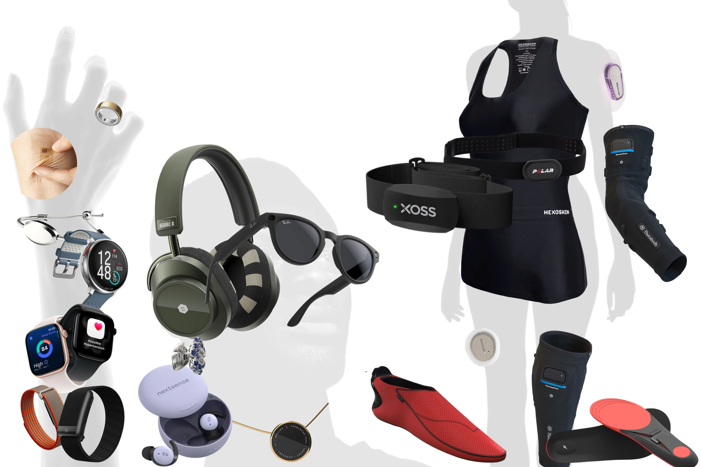
Figure 1.2 shows that the current consumer market of wearables is saturated with smart accessories such as wrist-wear (50%) and eye-wear & head-wear (25%) (Grand View Research 2025) that primarily focus on notifications, communication, and basic fitness tracking (Seneviratne et al. 2017). Although wearable technology is dominated by fashionable wearables occupying 50% of the market share (Grand View Research 2025), its application in healthcare is projected to grow in the next 8 years (Figure 1.2). Textiles, owing to their omnipresence, comfort, and compliance, have the potential to capture the majority of this market share. These characteristics well-position e-textiles to take over as the primary medium for long-term healthcare applications.
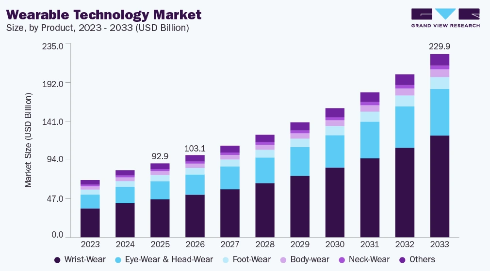
1.2Smart Clothing and Healthcare Applications
Essentially, textiles are called e-textiles when electronic components are integrated into them. Smart clothing refers to finished garments that utilize wearable technology. They can be functionalized electrically using comfortable conductive fibers or by modifying conventional clothes in conjunction with flexible electronic circuits or conventional sensing, actuating, and data transmission modules (Ruckdashel, Khadse, and Park 2022). The basic components that make up an e-textile are the base fabrics, interconnects, sensors, actuators, integrated circuits including computing resources, and power storage/harvesting (Ruckdashel, Khadse, and Park 2022).
Smart clothing is majorly used in monitoring users’ physiological signals, capturing biomechanical data, ambient sensing, and sensory applications for entertainment, health, therapy, sports, and the military (Komolafe et al. 2021; Ruckdashel, Khadse, and Park 2022). Developments in wearable technology have allowed electronics to be seamlessly integrated into daily clothing items such as vests (Cerqueira, Silva, and Santos 2020), bras (Zhang et al. 2025), compression wear (Hermann and Senner 2020), and armbands (Acar, Ozturk, and Yapici 2018), such that they may be easily concealable and imperceptible to an untrained eye.
In healthcare, smart wearables are being developed to acquire cardiac, muscular, respiratory, dermal, orthopedic, and various other biomedical data useful for potential diagnosis and general wellness (Cesarelli et al. 2021; Iqbal et al. 2021). They play a huge role in the administration of telemedicine (Akdeniz et al. 2024), keeping track of general health (Cesarelli et al. 2021; Wang et al. 2025), sports and fitness (Yang et al. 2024), and serving as workwear (Martins et al. 2023). Wearables that are textile-based and are utilized in healthcare are called textile-based Healthcare Wearable Devices, or tbHWDs (Iqbal et al. 2021). Figure 1.3 illustrates that in 2025, the healthcare segment accounted for 25% of the total wearable technology market by application. Furthermore, the rising innovations in wearable devices such as rings, bodywear, and wristwear, which capture real-time health updates for early detection and prevention, are expected to drive the growth of the segment over the forecast period (Grand View Research 2025).
1.3Wearability: Comfort & Fit
Wearability, reliability, and data accuracy are important factors for the adoption of e-textiles in healthcare applications (Seneviratne et al. 2017; Wang et al. 2025). Unlike on-body stationary devices, such as Electrocardiogram (ECG) machines, tbHWDs need to maintain reliable body contact while adapting to dynamic body movements to ensure good signal quality. Alongside having good battery life, a tbHWD should be biocompatible, robust, and comfortable for long-term use (Nemati, Deen, and Mondal 2012; Seo et al. 2024).
They must satisfy wearability criteria: being breathable, flexible, lightweight, stretchable, and washable to offer superior usability, comfort, and non-intrusiveness (Simegnaw et al. 2021). Successful wearability implies that the device is imperceptible, ensuring the wearer remains oblivious to its presence and that the device does not disrupt the flow of daily life (Yang et al. 2024). Central to wearability is comfort, as it directly dictates user compliance, which is essential for good signal quality and the long-term viability of continuous health monitoring (Wang et al. 2025).
In clothing, comfort is defined as a complex, multi-dimensional state comprising three distinct categories: thermophysiological comfort, involving thermal equilibrium; sensorial comfort, pertaining to the mechanical skin-fabric interaction; and psychological comfort, derived from aesthetics and social suitability (Song 2011). Intricately linked to comfort is fit, defined as the correspondence between the topography of the garment and the body. Fit is a mix and balance between the desired range of motion, ease, and fabric constraints of a clothing item. It is widely regarded as the most critical determinant of consumer satisfaction, influencing both aesthetic appeal and overall comfort (Fan, Yu, and Hunter 2004).
1.4The Evolution of Anthropometry and Sizing
To achieve proper fit, it is intuitive to measure the individual’s body parts corresponding to the garment. Due to an insufficient number of tailors to address population-wide needs for personalized fitting, population-based standard sizing is used alongside mass production techniques. However, this remains a significant challenge due to the high degree of morphological diversity in the population, alongside varying functional requirements and individual ergonomic preferences.
For millennia, tailors and dressmakers used non-standard methods of measurement such as the parchment strips that had notched codes to record individual client dimensions, and non-standard units such as the foot or cubit to make bespoke garments, but the modern flexible tape measure did not emerge until the early 1800s. In the mid-19th century, originating from the field of physical anthropology, linear anthropometry started utilizing rigid instruments such as anthropometers and calipers to measure the distance between bony landmarks (Britannica 2019). Unlike the flexible tape measure, which follows the body’s surface contour, these instruments measure straight-line distance, providing data unaffected by soft tissue deformation (Fan, Yu, and Hunter 2004). Figure 1.4 illustrates some traditional anthropometric tools. These measurement advances laid the foundation for the industrialization of clothing. The origin of standardized sizing traces back to military uniforms from World War II, when the need to outfit large numbers of soldiers efficiently necessitated scalable, size-based production. Pattern grading, the technical process of systematically scaling a base sample pattern to create a full range of sizes, became the dominant method for accommodating diverse body types while preserving the original silhouette (Ashdown 2007). The landmark Anthropometric Survey of US Army Personnel (ANSUR) of 1988 further solidified this approach, collecting extensive linear body measurements with the explicit aim of improving the fit and function of protective clothing and gear (Ashdown 2007). The amalgamation of anthropometric data, size standardization, and factory-scale production paved the way for the modern ready-to-wear industry.
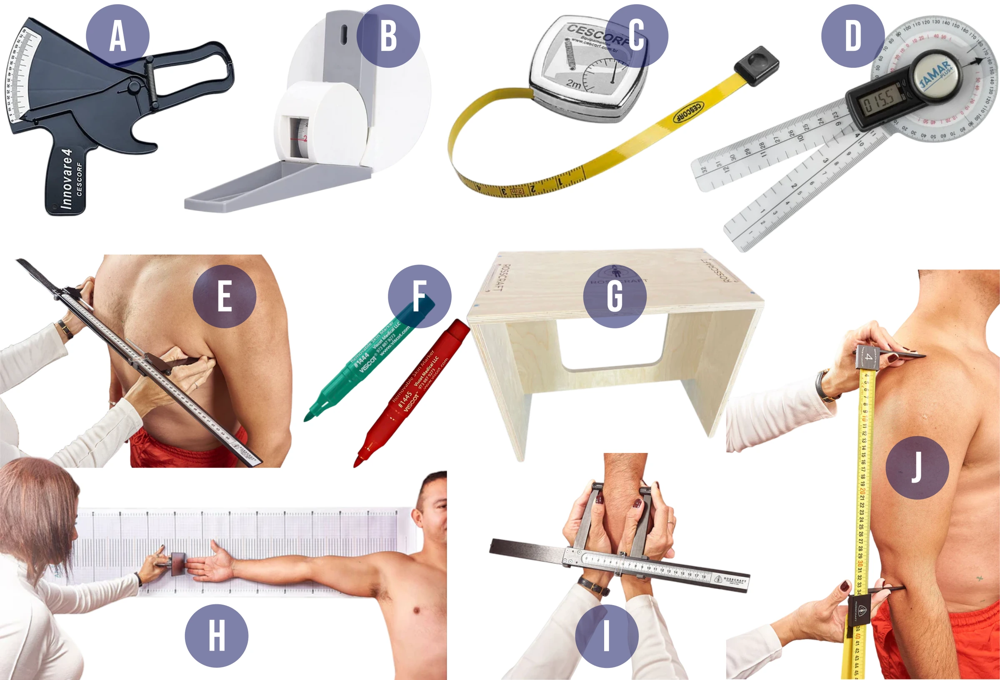
The shortcomings of this system, however, became increasingly apparent. Mass-produced garments rely on proportional grade rules derived from a theoretical “average” body, which systematically fails to account for the population’s diversity in body shape, posture, and bilateral asymmetry. As a result, consumers are routinely forced to accept garments that fit one body region acceptably while fitting other regions suboptimally. While personalized-fitting clothing resolves this by addressing each individual’s unique anthropometrics (Ashdown 2007), the mass-market industry seeks a scalable middle ground. Consequently, there is a growing shift toward utilizing 3D body scanning data to develop non-linear grade rules that more accurately reflect anthropometric diversity (Fairhurst 2008).
1.5E-Textile Manufacturing Challenges and Sustainability
State-of-the-art technologies allow the design and integration of all e-textile components at multiscale levels: fiber, yarn, fabric, coating, and embellishment (Ruckdashel, Khadse, and Park 2022). The optimal manufacturing method for a particular e-textile depends on the nature of the electronic materials and the components required to achieve functionalities. For instance, skin conductivity, a fundamental functionality for bio-signal interfacing, can be achieved using printing, electroplating, or embroidery, while complex functionalities like wireless communication (Lin et al. 2022b), motion sensing (Chen et al. 2018), and power storage (Rafique et al. 2023) require sophisticated manufacturing systems.
The introduction of conductive silver flake inks has transformed e-textile development by imparting essential properties such as flexibility, stretchability, and washability. Conductive ink printing technologies, such as inkjet printing, screen printing, gravure / flexography, and lithography, each offer unique trade-offs between high-resolution precision, production speed, and overall cost-effectiveness (Eghan et al. 2025). However, the manufacturing of e-textiles faces a series of challenges that significantly impede their adoption in the market, challenges that are further magnified in the healthcare sector due to higher regulatory and reliability standards. While pilot projects and small-scale deployments demonstrate promise, the costs of development, scaling, and integration into existing systems make large-scale production infeasible (Seneviratne et al. 2017; Akdeniz et al. 2024; Zhu and Kao 2022), restricting tbHWDs from reaching under-served populations.
Compounding these issues is the environmental toll. The textile industry is responsible for 8-10% of global carbon emissions (Imran et al. 2023) and 20% of wastewater (Earth.Org 2023), generating 92 million tons of waste annually. A significant portion of this waste stems from unsold inventory and deadstock, which accumulate when brands chronically overproduce relative to demand (De Schryver 2021). In the US, 2.6 million tons of returned garments are landfilled yearly (Paul 2024), with poor fit accounting for 70% of apparel returns (Ader et al. 2021). Ensuring correct fit therefore presents a viable strategy to prevent over 1.82 million tons of textile waste from being produced annually. Furthermore, addressing e-textile waste through low-volume customization is more responsible than relying on end-of-life recycling, as effective recovery pathways for low-value composite streams like e-textiles remain largely unavailable in practice (Ehrenfeld 2008).
1.6From General Clothing to Personalized Wearables
The problems of poor fit and waste in the commercial apparel industry are even more critical for healthcare e-textiles. Just like regular clothing, mass-produced medical wearables often fail to maintain the consistent sensor-to-skin contact required for reliable health monitoring. To fix the aforementioned issue, this thesis proposes a flexible, personalized production pipeline. The proposed approach adapts to various e-textile designs to guarantee a custom fit, clinical reliability, and environmental sustainability. To demonstrate the proposed concept, this master’s thesis study focuses on developing a smart wearable armband for monitoring opioid withdrawal symptoms.
The armband used by Veeturi et al. (2024) to monitor opioid withdrawal provides an ideal starting point. Because an armband is a structurally simple e-textile, it is the perfect candidate to prototype and test an automated manufacturing process. Eventually, this pipeline can be expanded to produce more complex, full-body smart e-textiles. Beyond medical settings, this personalized manufacturing method could also be translated into everyday clothing. With further improvements, this framework could allow general garments to be produced affordably and sustainably, helping to solve the industry’s mass-market waste crisis.
To systematically address these challenges, this thesis adopts a systems engineering approach focused on three central research motivations:
- How can 3D anthropometric data be dynamically integrated into a parametric CAD framework to optimize wearable sizing and ensure consistent, reliable sensor-to-skin contact?
- How can automated, multi-tool digital fabrication workflows be developed to reduce cycle times and eliminate manual assembly errors in e-textile production?
- How can these distinct data acquisition, design, and physical fabrication subsystems be synthesized into a unified, automated manufacturing system?
1.7Proposed Armband Manufacturing Pipeline
This research introduces an end-to-end framework encompassing 3D body scanning, parametric CAD modeling, and small-scale automation to achieve personalization of smart wearables. The proposed pipeline begins by scanning a human upper arm to acquire accurate topological data. Crucial dimensions are extracted from this 3D model using a custom Blender add-on, and the captured measurements are saved in an Excel format file. This file is then readable by CAD software, such as Autodesk Inventor Pro, which dynamically informs an adaptive 3D armband design. Ultimately, this parametric design exports a precise 2D pattern template tailored to the wearer. Building upon this digital workflow, a small-scale manufacturing machine and pipeline are designed to physically fabricate the personalized e-textile armband.
Smartphone photogrammetry or a handheld structured-light scanner produces a mesh of the arm.
Blender add-on isolates the arm and measures s₁, s₂, d.
One row per wearer, appended automatically.
Inventor iLogic regenerates the pattern and circuit layers.
RoboDK produces G-code and robot paths and checks for collisions.
Cut, laminate, print, place, cure, encapsulate.
1.8Summary
In summary, the rapid integration of electronics into textiles provides unprecedented opportunities for ubiquitous, non-intrusive physiological monitoring in healthcare. However, the success of tbHWDs hinges critically on wearability and customized fit, areas where traditional mass-production sizing systems fall short. By coupling 3D anthropometric scanning with an automated, parameterized manufacturing pipeline, this research addresses both the ergonomic challenges of e-textiles and the environmental impact of standardized apparel production. Through this case study of a smart wearable armband for opioid withdrawal monitoring, this thesis demonstrates an accessible, localized manufacturing framework that democratizes the creation of highly customized, functional e-textiles.
Background
2.1Human Body Measurements and Anthropometry
Anthropometry, the systematic measurement of the physical properties of the human body, has historically relied on manual tools and techniques. For centuries, dressmakers and tailors utilized non-standardized methods, gradually adopting flexible measuring tapes to record surface contours and linear rigid tools like spreading calipers for chord lengths between anatomical landmarks (Fan, Yu, and Hunter 2004). The modernization of anthropometry for mass production was heavily influenced by large-scale population surveys. A foundational pillar of these efforts has been the Anthropometric Survey (ANSUR) of US Army Personnel, which established comprehensive datasets used globally to dictate the design of equipment, workspaces, and apparel (Gordon and Friedl 1994). However, longitudinal reliance on such databases introduces significant statistical vulnerabilities and obsolescence. Human body dimensions are subject to a “secular trend”, a gradual shift in size and proportions across generations due to changes in nutrition, environment, and lifestyle. Consequently, static databases rapidly lose their statistical relevance; for example, widespread reliance on legacy ANSUR data resulted in pronounced design mismatches as average body sizes increased and morphological variability widened over subsequent decades. Furthermore, datasets derived from active-duty military personnel inherently fail to statistically represent the broader civilian population, making them inadequate for mass-market fashion. Compounding the reliance on obsolescent anthropometric data are the systemic issues ingrained in the clothing industry’s sizing infrastructure. Sizing in the apparel industry is traditionally achieved through “proportional grading”, a method that takes a base size pattern, often derived from theoretical population averages, and scales it up or down uniformly (Ashdown 2007). This practice introduces several critical challenges:
Lack of Universal Standardization
There is no globally recognized standard for clothing sizes. Brands develop unique sizing systems based on their specific target demographics and internal philosophies, leading to significant fit inconsistencies across different retailers.
Non-Linear Morphological Diversity
Traditional grading rules falsely assume that the human body scales uniformly across all measurements. In reality, body shapes, posture, and weight distribution vary non-linearly. A linearly graded garment inevitably fits poorly as it diverges from the base size.
Vanity Sizing and Production Variance
The industry is plagued by vanity sizing, the practice of labeling garments with smaller nominal sizes than their physical measurements to appeal to consumer psychology. Combined with manufacturing variances introduced by fabric stretch, cutting tolerances, and finishing processes, achieving consistent fit using traditional paradigms is exceedingly difficult.
Ultimately, mass-produced clothing fails to accommodate the vast morphological diversity found within the population, leading to poor garment fit and resulting in high consumer return rates and extensive economic and environmental waste. Consequently, there has been a paradigm shift toward non-contact, three-dimensional (3D) body scanning technologies capable of rapidly and accurately capturing complex anatomical geometries to develop non-linear, customized grading rules (Fairhurst 2008).
2.1.1Introduction to 3D Scanning Technology
Three-dimensional (3D) scanning technology originated in the mid-20th century as a means to capture the physical world and translate it into workable digital models. Initially developed for industrial and metrological applications such as reverse engineering aerospace components and rigorous quality control defect detection, early scanners were rudimentary and highly specialized (Brügge et al. 2023). However, as computing power surged and sensor costs decreased, 3D scanning rapidly diversified. Today, it facilitates the non-destructive digital preservation and archiving of museum artifacts with photorealistic fidelity (Wachowiak and Karas 2009), aids in designing bespoke medical prostheses and orthoses to avoid the discomfort of traditional plaster casting (Haleem and Javaid 2019), and is fundamentally disrupting anthropometry and the apparel industry. Table 2.1 lists some common terminology used in 3D scanning.
| Term | Definition |
|---|---|
| 3D scanning/digitizing | The process of collecting 3D data from a physical object through a variety of data acquisition devices such as portable CMM arms, structured light systems, and laser-based systems |
| 3D model | Numerical description of an object that can be used to render images of the object from arbitrary viewpoints and under arbitrary lighting conditions |
| Accuracy | Dimensionally how precisely each generated point describes the intended point on the surface of the object |
| Alignment | The process of orienting the scan data (or CAD data) to be in a logical X, Y, Z coordinate system; this may be using known datums on the part/fixture, or features of relevance, or a best-fit to existing 3D data or CAD |
| CAD | The use of computer technology to assist in the creation, analysis, or modification of a design |
| Point cloud | A set of points that expresses the position (X, Y, and Z), intensity (I), and color (R, G, and B) value data for scanned objects |
| Polygonal mesh | A polygonal mesh is a 3D model comprised of polygonal planes connected together in order to form a manifold surface |
| Resolution | In reference to 2D imagery, resolution refers to the total number of pixels within an image, which is just its length times its width, as measured in pixels |
| Surfacing | The process of generating CAD data, assisted by using the results of 3D scanning to mathematically describe the surface geometry of a part or object |
From Figure 2.1, 3D scanners are broadly classified into contact and non-contact-based categories. Contact three-dimensional scanners are then further sub-classified as to whether the scanning method is a destructive (e.g., knife-edge scanning microscopy, focused ion-beam scanning electron microscopy, etc.) or non-destructive process (e.g., coordinate measuring machine, articulated arms with encoders, etc.). Noncontact three-dimensional scanners are further sub-classified by the type of electromagnetic radiation utilized. Within visible light-based non-contact scanning, methods can be further divided into devices that emit or absorb radiation (Daanen and Ter Haar 2013).
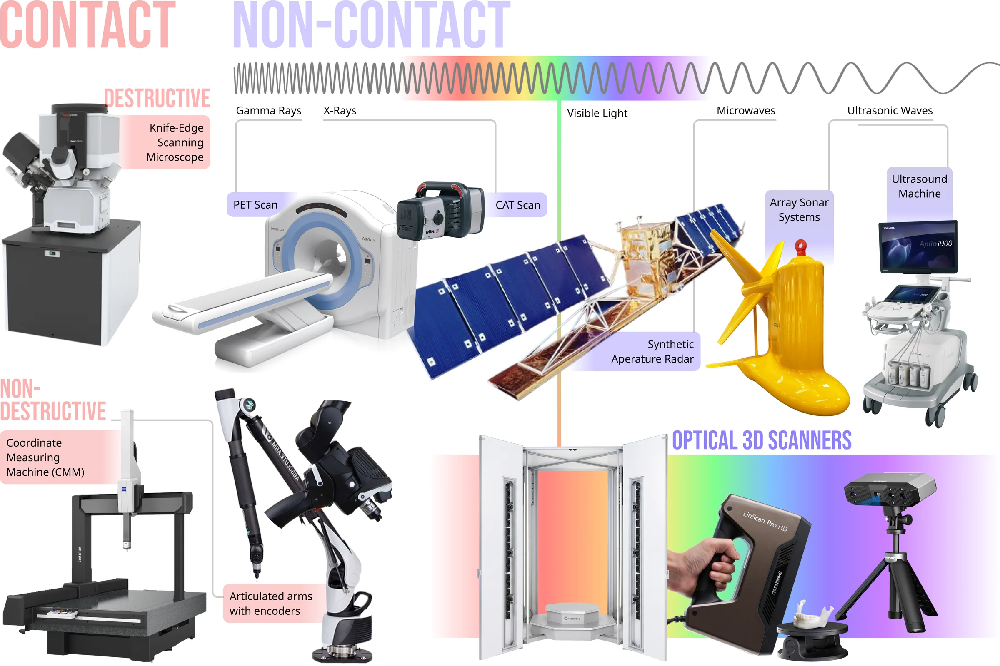
2.1.2The Dominance of the Visible Light Spectrum
For external body surface measurements, technologies operating within or near the visible light spectrum (including near-infrared) are overwhelmingly preferred. Unlike X-rays, visible and near-infrared light is non-ionizing and entirely safe for human exposure (Daanen and Ter Haar 2013). Furthermore, the skin reflects these wavelengths predictably, allowing scanners to capture high-resolution topographic data, and often photorealistic color texture, rapidly and cost-effectively without any biological risk (Fu and Yang 2014).
Optical 3D surface scanning techniques operating in the visible/infrared spectrum are further divided into active and passive methods. Active Scanners are the ones that project a directed energy source (such as a laser point, a line, or a structured grid of light) onto the object and use sensors to observe the reflection. Passive Scanners do not emit any light themselves; instead, they rely entirely on detecting ambient environmental radiation reflected off the subject (e.g., standard photography). Table 2.2 dives deeper into the core principles deployed through several specific technological mechanisms, and figure 2.2 illustrates the general working mechanism of optical 3D scanning.
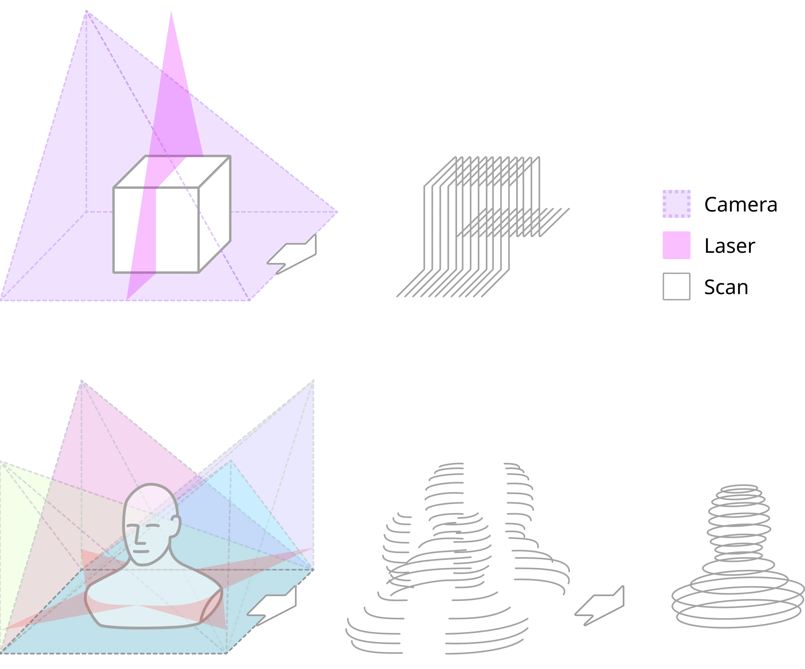
| Technology | Pros | Cons | Applications |
|---|---|---|---|
| Active: Laser TriangulationProjects a laser point or line while a sensor records the reflection angle. Computes distance via trigonometric triangulation. | High accuracy and resolution; robust against ambient light variations. | Slower scan times; susceptible to subject movement and reflective/dark surfaces. | Industrial metrology, reverse engineering, high-precision artifact scanning |
| Active: Structured LightProjects a known pattern (grids or stripes) onto the subject. Sensors analyze the deformation of the pattern to reconstruct the 3D surface. | Extremely fast acquisition (ideal for human subjects); high accuracy; detailed color/texture capture. | Sensitive to strong ambient lighting; struggles with highly reflective or transparent materials. | Full-body anthropometry, medical prosthetics, apparel sizing |
| Active: Time-of-Flight (ToF)Emits light pulses and calculates distance by measuring the time taken for the light to reflect back to the sensor. | Can scan over large distances; unaffected by subject motion; fast processing. | Lower resolution and precision compared to triangulation; high sensor noise | Architectural surveying, autonomous vehicle navigation, LiDAR mapping. |
| Passive: PhotogrammetryUses multiple overlapping 2D photographs taken from different angles. Algorithms detect common features to rebuild 3D geometry. | Inexpensive; purely software-driven; excellent color and texture capture. | Highly computationally intensive; poor results on texture-less or featureless surfaces. | Cultural heritage preservation, aerial surveying, 3D asset generation. |
In the commercial landscape, 3D body scanners are primarily divided into three form factors, designed for specific operational environments: stationary booths, handheld devices, and software applications that utilize the mobile device’s camera. Table 2.3 compares these form factors.
| Stationary (Booth) | |
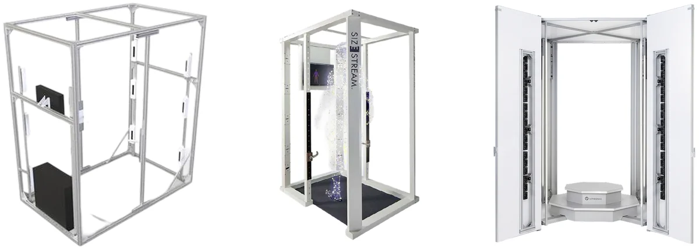 | Pros
|
Cons
| |
| ExamplesTC2, Size Stream, Vitus XXL | |
| Handheld | |
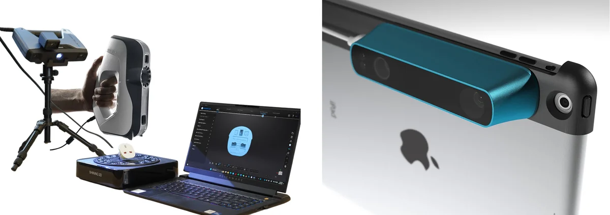 | Pros
|
Cons
| |
| ExamplesEinScan, Artec Eva, Structure Sensor 3 | |
| Mobile (Smartphone) | |
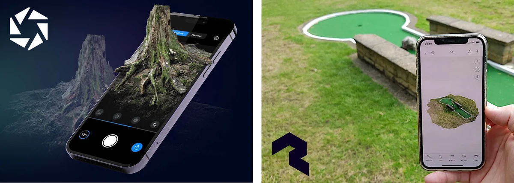 | Pros
|
Cons
| |
| ExamplesPolycam, Heges, RealityScan | |
Among the specialized stationary systems, the TC2 scanner occupies a prominent position in apparel research, utilizing structured infrared light to rapidly generate comprehensive point clouds and autonomously extract traditional tailor measurements (Parker, Gill, and Hayes 2017). Handheld structured-light scanners like the EinScan Pro HD represent a middle ground, offering portability for localized anatomical scanning while maintaining high micron-level precision suitable for prosthesis or specialized ergonomic assessments (Yan, Wirta, and Kämäräinen 2020). Mobile software such as Polycam is utilized to capture indoor architectural layouts, scan physical objects, and create high-quality 3D assets for games, virtual reality, and architectural visualization.
2.1.3The Case for 3D Scanning in Apparel and Ergonomics
3D scanning presents a crucial intervention by capturing robust, non-linear biometric data. It is inherently more accurate and efficient than traditional tape measures because it eliminates manual human error, avoids soft-tissue deformation (since there is no physical contact during scanning), and captures a digital twin that can be perpetually referenced and re-measured (Markiewicz et al. 2017; Apeagyei 2010).
Furthermore, dynamic 3D scanning enables researchers to analyze dimensional measurement changes across different active body postures (e.g., squatting and reaching). This capability is critical for developing functional sportswear and specialized workwear, preventing restriction of movement without relying on excessive garment ease (Choi and Ashdown 2011).
2.1.4Sensor Placement
Understanding dynamic body topography is pivotal not only for physical fit but also for the strategic localization of electronic components in wearable technologies. As discussed by Zeagler (2017) in their seminal work on “Where to wear it” technology, the placement of sensors requires careful consideration of mechanical stretch, social acceptability, and target physiology. Figure 2.3 illuminates the areas on the body where a designer should most likely place a wearable device. The high-fidelity topographical data obtained from 3D scanning perfectly interfaces with these heuristic guidelines, dictating precisely where an e-textile sensor module, such as an armband for continuous monitoring, must be located for optimal skin contact and minimal motion artifact.
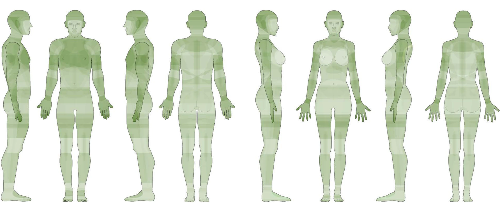
2.2E-Textile Development
Electronic textiles (e-textiles) represent a paradigm shift in wearable technology, merging the ubiquity and comfort of standard fabrics with the functional capabilities of modern electronics. E-textile development generally follows two fundamental approaches: “sensor ON the textile,” where rigid or flexible electronic modules are superficially attached or embroidered onto a conventional fabric substrate, and “textile IS the sensor,” where the intrinsic fibers, yarns, or fabric matrices are engineered to possess electrical properties (e.g., via intrinsically conductive polymers or metallic core yarns) (Ruckdashel, Khadse, and Park 2022).
Comparative Analysis of Fabrication Methods
The transition from concept to functional e-textile requires robust fabrication methods capable of maintaining electrical conductivity without compromising the textile’s mechanical properties (flexibility, drape, and breathability). Table 2.4 presents a comparative analysis of primary manufacturing techniques, which reveals distinct trade-offs between precision, speed, and durability.
| Embroidery | |
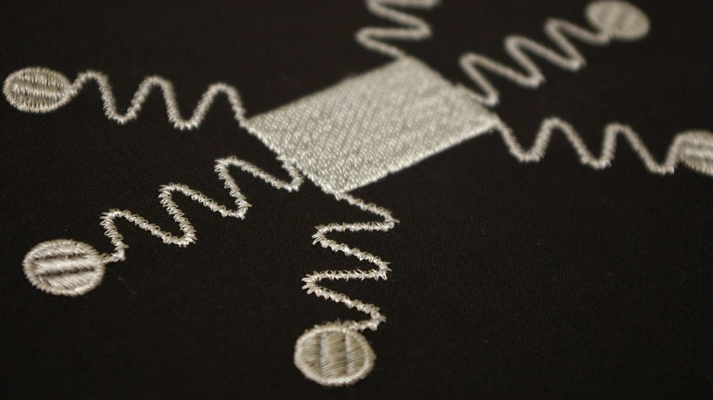 | ProcessConductive threads are stitched onto a base fabric using automated embroidery machines |
Advantages
| |
Limitations
| |
| Knitting/Weaving | |
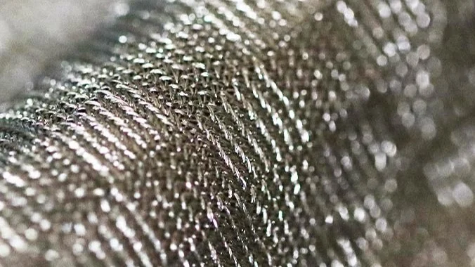 | ProcessIncorporates conductive yarns directly during the textile creation process |
Advantages
| |
Limitations
| |
| Coating/Dipping | |
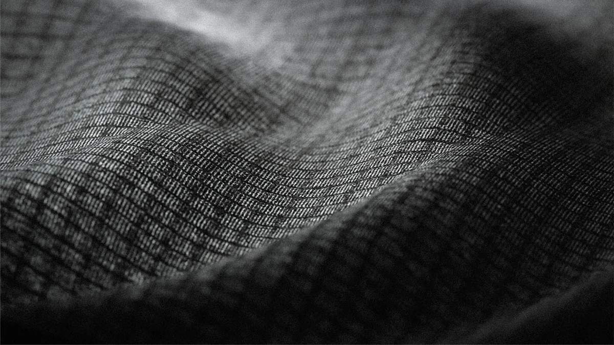 | ProcessSubmerging fabric into conductive solutions (e.g., graphene oxide) or using chemical vapor deposition |
Advantages
| |
Limitations
| |
| Printing/Spraying | |
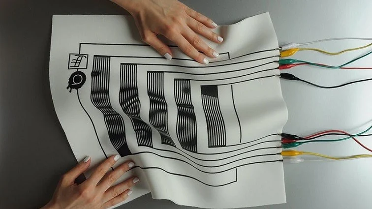 | ProcessAdditive application of conductive inks (e.g., silver ink) onto the surface via screen, inkjet, or transfer printing |
Advantages
| |
Limitations
| |
Hierarchical Levels of E-Textile Integration
The level at which electronics are integrated into the textile dictates the system’s overall flexibility, washability, and manufacturability. E-textiles can be categorized across a hierarchical scale, ranging from the fundamental fiber level to the macro garment level as shown in table 2.5. E-textiles can also be classified based on the role of the textile in the e-textile, such as textile as sensor, textile as interconnect, textile as actuator, textile as computing resource, and textile as power storage or harvesting (Micus, Haupt, and Gresser 2020).
| Fiber / Yarn Level | |
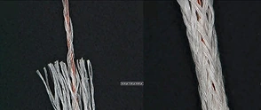 | DescriptionConductive elements are integrated at the foundation. Fibers are spun with conductive polymers, or metallic wires are twisted around a central dielectric core. |
| Example TechnologiesCore-spun conductive yarns, carbon-nanotube coated fibers | |
| Fabric Level | |
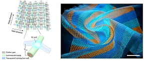 | DescriptionFunctional yarns are interwoven, knitted, or embroidered to form structural circuits, antennas, or stretchable conductive traces directly within the textile matrix. |
| Example TechnologiesIntarsia knitting, Jacquard weaving of conductive threads | |
| Coating / Printing Level | |
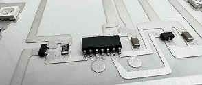 | DescriptionConductive inks or pastes are applied to a pre-existing non-conductive fabric substrate to form circuits and sensor electrodes. |
| Example TechnologiesScreen-printed silver flakes, inkjet printing of PEDOT:PSS | |
| Garment Level | |
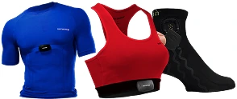 | DescriptionFinished textiles are augmented with discrete electronic modules, sensors, and power supplies, often requiring specialized interconnects (e.g., snap fasteners). |
| Example TechnologiesSmart vests with attachable ECG modules | |
2.3Manufacturing Systems for E-Textiles
While individual fabrication techniques like screen printing and embroidery have matured, holistically integrating them into a cohesive automated manufacturing system remains a formidable bottleneck for the industry.
Historically, e-textile production has been relegated to labor-intensive, manual assembly or small-batch pilot lines. Researchers and industries have attempted to bridge this gap through modular approaches. For instance, the development of modular e-textile toolkits allows designers to rapidly prototype by snapping pre-fabricated electronic islands onto conductive fabrics (Zhu and Kao 2022). In larger-scale industrial trials, automated pick-and-place machines (SMD placement) have been adapted to deposit rigid components onto flexible textile substrates pre-printed with conductive adhesives. Furthermore, recent studies demonstrate the potential of hybrid systems, such as automated ultrasonic welding and low-temperature anisotropic conductive adhesive (ACA) bonding, to mechanically and electrically join components to textiles without thermal damage (Islam et al. 2024; Casciani, Wang, et al. 2023).
The lack of standardization across materials and manufacturing processes remains the primary impediment to mass commercialization. Conventional electronics rely on rigid, standardized printed circuit boards (PCBs), whereas textiles are inherently compliant, porous, and subject to severe mechanical deformation during standard use and washing.
Interconnect Reliability
The interface between hard electronic components (microprocessors, solid-state batteries) and soft textiles represents a critical failure point. Traditional soldering is incompatible with most synthetic fibers due to high thermal degradation, demanding alternative strategies like conductive epoxies, which often lack the necessary mechanical flexibility (Stanley et al. 2021).
Durability and Washability
E-textiles must withstand rigorous laundering cycles and potential exposure to moisture. While traditional encapsulation of rigid circuits in thick thermoplastic polyurethane (TPU) or silicone protects against water, it fundamentally alters the garment’s localized stiffness. To circumvent this, recent innovations successfully utilize core-sheath structures, encapsulating room-temperature liquid metal (like Galinstan) inside highly stretchable polymer tubing (e.g., PFA or PU). These liquid metal fibers provide massive strain tolerances, up to 600% elongation, without fracturing, and their inherent hydrophobicity prevents short-circuits even when completely submerged underwater or subjected to repeated machine washing (Qi et al. 2022; Lin et al. 2022a).
Scalability and Automation
The apparel industry typically utilizes cut-and-sew manufacturing, which is highly manual and prone to dimensional variations. Conversely, electronics manufacturing demands microscopic precision. Aligning these two disparate manufacturing mentalities into a unified, automated robotic assembly pipeline is extremely difficult, particularly when handling limp materials that deform under mechanical tension.
End-of-Life and Disassembly
The monolithic integration of mixed materials (metals, polymers, natural fibers) drastically complicates recycling protocols, raising significant environmental concerns regarding e-waste generation (Köhler and Som 2011).
Study Design
3.1Design Brief
The principal objective of this thesis is to conceptualize and design an automated, personalized smart wearables manufacturing pipeline. To showcase this proposed pipeline, an armband aimed at continuous physiological monitoring for patients managing Opioid Use Disorder (OUD) is utilized as a primary case study.
The design strategy for this tbHWD was fundamentally driven by a critical intersection of social, technical, and manufacturing requirements. A primary consideration in the development of monitoring devices for the OUD patient demographic is the mitigation of social stigma, which historically acts as a significant barrier to technology adoption. Traditional, highly visible medical monitors can induce self-consciousness and discomfort, leading to poor adherence (Rintamaki and Davis 2006; Campbell, Eyal, and Musiimenta 2016). An upper-arm band with a low-profile form factor that can be easily and entirely concealed beneath standard clothing specifically addresses this social vulnerability. This discretion is essential for promoting optimal, long-term patient compliance.
From a technical perspective, in reference to figure 2.3, the upper arm location offers distinct advantages over alternative placement sites. As established in the literature concerning the functional and technical considerations of on-body device locations, the anatomical proximity to the heart significantly improves the signal-to-noise ratio for cardiological measurements such as electrocardiography (ECG) and heart rate variability (HRV) (Zeagler 2017). Furthermore, compared to distal extremities like the wrist, the upper arm provides a relatively stable surface that experiences significantly less high-impact motion interference during daily tasks, directly improving the clinical reliability of the acquired sensor data.
From a bespoke manufacturing and assembly perspective, the uncomplex construction of the armband greatly streamlines the transition toward automated fabrication. The absence of intricate, multi-directional seams substantially minimizes potential electromechanical points of failure and establishes a uniform distribution of circumferential tension across the arm. Ultimately, the geometric simplicity of this form factor makes the proposed small-scale manufacturing and customization process far more accessible and repeatable, establishing a foundational framework that can subsequently support development of more complex wearables.
3.2Design Constraints
The realization of the aforementioned design brief necessitates strict adherence to several functional and mechanical constraints to ensure clinical efficacy and sustained wearability. A continuous physiological monitoring device is only viable if the integrated sensors maintain stable, unyielding contact with the skin surface. Such mechanical consistency is fundamental to high-quality data collection. Personalized fit ensures that the sensors are securely stabilized at optimal anatomical locations and do not migrate from their designated position during active motion. The structural shape and the mechanics of the textiles implemented must adapt to the wearer’s dimensions, shape and movements to mitigate the slippage commonly observed with generalized sizing. Material choices are equally constrained by the demanding operational environment of functional e-textiles, specifically the preservation of electrical conductivity amid rigorous mechanical strain, such as washing. For long-term viability, these mechanical constraints must not compromise comfort; the device must remain imperceptible, actively preventing any physical or psychological hindrance to the user’s daily activities.
3.3Execution Plan Overview
The development of the personalized smart wearables manufacturing pipeline was structured into a four-part execution strategy. This approach systematically addresses the challenges of anthropometric data acquisition, parametric design generation, manufacturing processes, and manufacturing system fabrication.
- Part 1 · Capture
Human Body Measurement Extraction
A fundamental requirement for personalized wearables is the accurate and reproducible capture of human body measurements. This part focuses on establishing a user-friendly measurement methodology that minimizes human error and dependency on highly skilled operators. The objective is to extract precise, localized dimensional data of the human body and structure it into a database, ensuring the biometric information is reliably stored and easily accessible for downstream computational processes.
- Part 2 · Digital Processing
Armband Wearable Design
Guided by the established design constraints and patient needs, this part focuses on developing a highly adaptable foundational pattern design. Rather than generating a static model, the pattern design must be inherently parametric, allowing it to autonomously generate personalized sizes simply by inputting a new user’s dimensional data. To achieve this, an automation bridge must be constructed that seamlessly links the extracted body measurement database to the pattern CAD model, ultimately exporting the precise digital instructions required for manufacturing.
- Part 3 · Simulation
Manufacturing Pipeline
This part operationalizes the relationship between the parametric wearable design and the physical manufacturing machine by defining a step-by-step fabrication pipeline. Establishing a digital twin of the manufacturing environment allows for rigorous design rule checking and clash detection, ensuring that the machine-level instructions are error-free and highly efficient prior to physical execution. This part also involves making a pre-production digital simulation of the automated processes.
- Part 4 · Execution
Machine Design
Finally, to physically realize the bespoke wearables, a specialized manufacturing system must be engineered. This part entails the comprehensive design of a manufacturing system capable of executing a sequence of fabrication operations precisely. These operations include material handling, conductive ink dispensing, fabric cutting, and thermal curing. Furthermore, this machine architecture must remain sufficiently versatile to accommodate the production of other functional e-textiles sharing a similar electronic blueprint.
3.4Part 1: Human Body Measurement Extraction
3.4.13D Scanning
Rather than relying on traditional manual anthropometry, a process that is inherently time-consuming, highly dependent on operator skill, and susceptible to significant measurement error, this methodology employs 3D body scanning technology. A diverse suite of 3D scanning hardware and software was evaluated across several critical parameters, including the underlying technological frameworks (Time-of-Flight, Structured Light, Photogrammetry etc.), performance metrics, logistical requirements, and overall utility in Table 3.1. To ensure empirical validity and establish a reliable accuracy baseline, a standardized physical control model, serving as a close representation of the organic shape of the human arm, was fabricated using white Polylactic Acid (PLA) filament with precisely calibrated dimensions (Figure 3.1).
| Scanner Model | 19M by TC² | Structure Sensor (Mark II) | EinScan Pro HD (Handheld Mode) | Polycam App (iPhone/iPad Pro) | Polycam App (Android) | Reality Scan w/ any Smart Phone |
|---|---|---|---|---|---|---|
| Math used for point cloud | Structured Light / Time-of-Flight (ToF) | Structured Light / Active Stereo | Structured Light | LiDAR (ToF) & Photogrammetry | Photogrammetry | Photogrammetry |
| Sensors Used | IR depth sensors & RGB cameras | IR Projector & IR Camera, Global Shutter | LED light projector & structured light cameras | Apple LiDAR Sensor & RGB Camera | RGB Camera | RGB Camera, ARCore tracking |
| Scan accuracy | less than 5 mm (body scanning) | 1-2 mm at 0.5m | 0.045 mm + 0.3 mm/m | Approx. 1-2 cm (1-2% drift) over large areas; not survey-grade | cm-level (depends on camera & lighting) | cm-level (depends heavily on camera & overlap) |
| Effective scanning range | 1 to 2 meters (full-body volume) | 0.3m to 5m+ | 30 mm to 510 mm | Up to 5 meters (LiDAR limit) | Varies (macro to landscape) | Varies (best for object scale / few meters) |
| Scan resolution | High (tens of thousands of body points) | 1280 × 960 (depth resolution) | 0.2 mm to 3 mm point distance | Low/Medium (LiDAR), High (Photogrammetry) | High (Photogrammetry depends on image count) | High (Outputs high-fidelity textured meshes) |
| Scan Time | 1-2 secs | 1-2 mins | 1-2 mins | 1-2 mins | 1-2 mins | 1-2 mins |
| Processing Time | 17s | Immediate | GPU dependent | 5-15 mins (Cloud) | 5-15 mins (Cloud) | 10-20+ mins (Cloud) |
| Source | URI TMD Behavioural Lab | URI Wearable Biosensing Lab | URI Library Maker Space | Personal | Personal | Personal |
| Cost of hardware | Custom pricing (Typically $10,000+) | $399 (Discontinued) | $7,699 (Base unit) | Cost of mobile device ($999+) | Cost of mobile device | Cost of mobile device |
| Cost of software | Custom pricing/Subscription | Included / Skanect Pro ($129) | EXScan Pro (Included with hardware) | Free Tier / Pro: $150/year | Free Tier / Pro: $150/year | $0 |
| Total cost | $10,000+ | $399 to $528 (approx.) | $7,699 Base / $8,399 w/ Color Pack | $0 to $150/year | $0 to $150/year | $0 |
| Setup requirements | 4′ × 4′ fixed space (fitting room size footprint) | iPad/iOS device, Lightning/USB-C connection, bracket mount | Windows 10/11 64-bit, Intel i7+, 16GB+ RAM, NVIDIA GPU (GTX 1060+) | iOS device with LiDAR (iPhone 12 Pro+, iPad Pro 2020+) | Android 10+, 3.5GB+ RAM, capable GPU | Android 7.0+, ARCore support, Epic Games Account |
| Learning Curve / Training Required | Moderate (Requires vendor training) | Low (Guided UI; requires understanding basic scanning movement) | Moderate (Requires practice in scan alignment) | Very Low (Highly intuitive consumer app interface, point-and-shoot) | Very Low (Highly intuitive consumer app interface, point-and-shoot) | Low (Guided UI; requires understanding of photogrammetry rules) |
The primary objective of this multi-factor assessment was to systematically identify and recommend optimal scanning solutions tailored to varying operational environments, encompassing commercial mass-customization, personal at-home measurement, and rigorous academic research. Crucially, while the initial validation is performed using a standardized control model, the overall workflow is designed to translate directly to real human arms under clinical and commercial conditions.
3.4.2Blender Add-on
Blender, a robust, open-source 3D computer graphics software toolset, was utilized to semi-automate the extraction of precise anthropometric data from the raw 3D mesh models. Blender was specifically selected due to its integrated Python scripting environment, which permits the development of custom automation tools known as “add-ons”. In Blender’s context, an ‘Add-on’ is a Python-based plugin that extends the software’s functionality. Operating under an open-source license, Blender functions as a centralized, cost-effective computational environment for both 3D model manipulation and targeted anthropometric extraction.
3.5Part 2: Armband Wearable Design
3.5.1Pattern Design Exploration
The development of an optimal 2D flat pattern for the personalized armband progressed through three distinct geometric iterations: a cylindrical model, a conical frustum model, and an anatomically conforming 3D mesh extraction.
In the initial iteration, a simple cylindrical geometry was evaluated. A rectangular fabric pattern was drafted with a width of 80 mm and a length corresponding to the mid-section circumference of the user’s upper arm. Following assembly, physical evaluations revealed significant fit deficiencies; the band exhibited uneven tension distribution, appearing tight in localized areas while loose in others. Furthermore, dynamic movement of the arm, specifically flexion and extension of the biceps and triceps brachii, induced localized tension changes that caused the band to migrate distally towards the elbow.
To address the limitations of the cylindrical model, the geometry was refined by approximating the upper arm as a conical frustum rather than a uniform cylinder. Anthropometric measurements of the upper arm were taken at two cross-sections separated by a longitudinal distance of 10 cm, revealing a significant taper. In a flattened, two-dimensional state, this frustum geometry manifests as an annular sector, characterized by two concentric circular arcs of differing lengths (Figure 3.2).
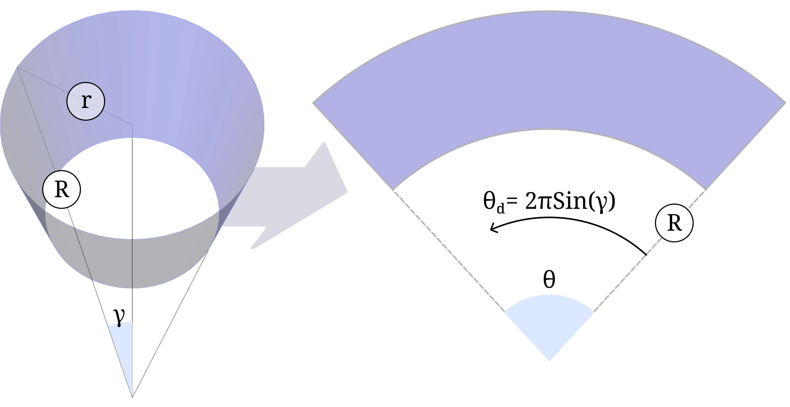
While rapid prototyping of this annular sector pattern demonstrated improved overall conformity compared to the cylindrical baseline, edge misalignment and localized gapping persisted during active muscle deformation. To achieve an anatomically precise fit, an organic 3D human arm mesh was analyzed. The 3D model was imported into Blender and retopologized to establish a uniform quad-based mesh structure (Figure 3.3). A segment corresponding to the target upper arm placement area was isolated, and its three-dimensional boundary geometry was extracted. Following UV-unwrapping of this double-curved 3D section into a 2D coordinate space, the resulting boundary profiles were analyzed. The flattened 2D pattern (Figure 3.3) demonstrated that the true anatomical boundaries do not conform to simple circular arcs; instead, they manifest as frequency-locked sinusoidal waves superimposed onto the concentric arcs of an annular sector.
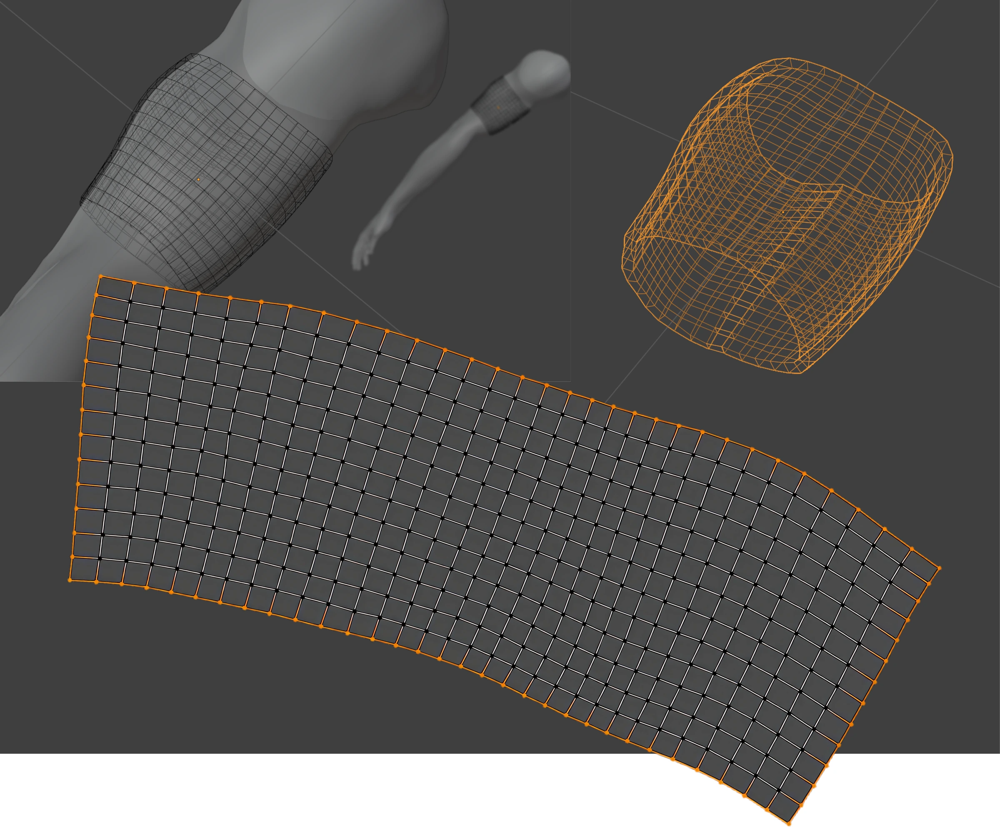
3.5.2Armband Design Mathematical Model
This section covers the mathematical formulation required to generate a 2D flat pattern for a 3D tapered cylinder (conical frustum), specifically applied to the design of an arm sleeve. The derivation defines a geometric model where the upper and lower boundaries are characterized by parallel, frequency-locked sinusoidal waves. The model is driven entirely by the extracted measurements: circumference of the upper arm towards the armpit, circumference of the upper arm towards the elbow, and the normal distance between them, ensuring the resulting wave peaks do not exceed the theoretical base geometric envelope.
The objective is to map a 3D conical surface to a 2D polar coordinate system (r, θ). With reference to figure 3.4, the primary constraints of the pattern are defined by three physical measurements:
- s₁: The arc length of the outer (larger) boundary equal to the arm circumference of the upper arm towards the armpit.
- s₂: The arc length of the inner (smaller) boundary equal to the arm circumference of the upper arm towards the elbow.
- d: The normal (radial) distance between the two arcs.
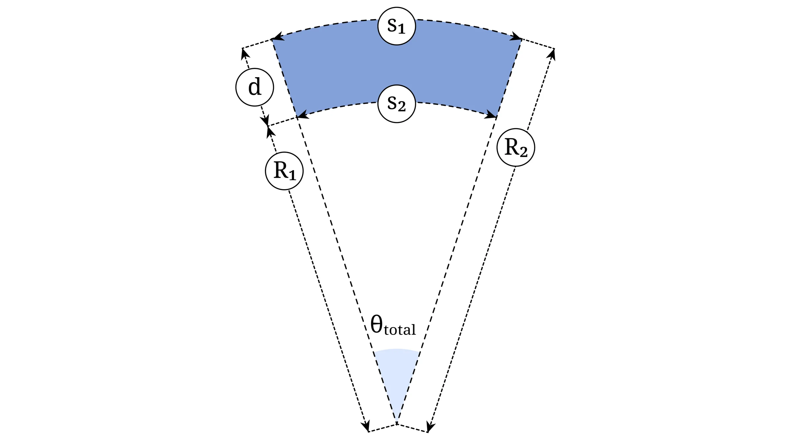
To construct the 2D development, we assume the unrolled sleeve forms an annular sector. The arc lengths s₁ and s₂ represent the bounding envelopes of the sector, and the curves bounding the physical fabric will oscillate inward from these boundaries.
Before defining the wave mechanics, the base circular sector must be established. In a polar coordinate system, the relationship between arc length (s), radius (R), and sector angle (θtotal) is s = R·θtotal. Given two concentric arcs separated by a radial distance d, we know that R₁ − R₂ = d. By substituting the arc length relations R₁ = s₁/θtotal and R₂ = s₂/θtotal, we can solve for the total sector angle θtotal as shown in Equation (1):
With the total sector angle known, the base radii for the outer and inner envelopes (R₁ and R₂) are defined in Equations (2) and (3):
To align the pattern symmetrically along the vertical y-axis (where θ = π/2), the domain of the angle θ is restricted to a symmetrical spread extending by θtotal/2 on either side as defined in Equation (4):
The upper and lower edges of the sleeve are modeled as sinusoidal waves superimposed onto the base circular sector. The design requires exactly N full wave cycles (where N = 2) to span the entire sector angle θtotal. A standard cosine wave completes N cycles when the argument evaluates to 2πN. Therefore, the frequency multiplier n is calculated as shown in Equation (5):
For exactly two wave cycles (N = 2), the frequency n is:
To ensure the two wavy edges remain strictly parallel (maintaining a constant radial separation distance d at all angles), both curves must possess an identical absolute amplitude A. Scaling the amplitude proportionally to the radius would result in varying distance between the curves, which violates the geometric constraint of the sleeve material.
The base radii R₁ and R₂, defined in Equations (2) and (3), represent the strict outer envelopes of the geometry. The wave peaks must not exceed these radii. A standard polar wave r(θ) = R + A cos(…) peaks at R + A. To enforce the envelope constraint, the baseline of the wave must be shifted inward by the amplitude A, making the new baseline (R − A). Consequently, the wave function fluctuates between a maximum of R and a minimum of R − 2A.
Combining the base geometry, frequency locking, parallel amplitude, and envelope constraints yields the final system of polar equations for the armband pattern (Figure 3.5). The outer boundary curve r₁(θ) and the inner boundary curve r₂(θ) are defined in Equations (7) and (8):
where the parameters are defined directly by the physical measurements s₁, s₂, d, and the desired amplitude A as summarized in Equations (9), (10), and (11):
The equations are evaluated over the continuous domain defined in Equation (12):
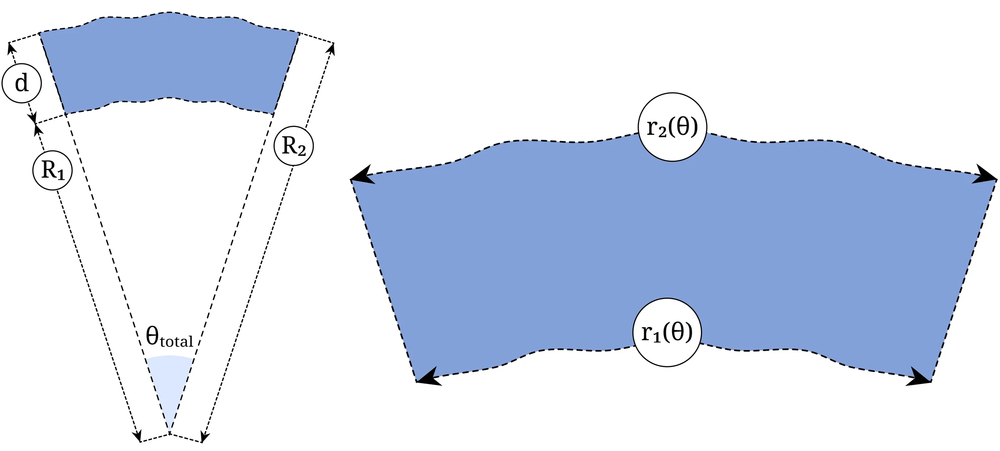
This mathematical framework successfully unrolls a 3D frustum with a scalloped boundary into a 2D plane. By linking the dynamic frequency n directly to the sector angle θtotal in Equation (6), and by shifting the wave baselines to respect the geometric envelopes as defined in Equations (7) and (8), this model ensures a physically accurate and scalable flat pattern that can be directly applied to CNC cutting or textile manufacturing.
3.5.3Component Choice
The foundation of wearable electronic architecture relies on a strategic material stack designed to balance mechanical flexibility with reliable electrical performance. A stretchable fabric substrate composed of synthetic polymers serves as the foundational base layer. This substrate is selected for its high elastic recovery and compliance, which allows the armband to conform precisely to the user’s dynamic body shape. Maintaining close, continuous contact is critical for preventing signal loss or motion artifacts in the integrated physiological sensors.
Conventional printed circuit boards (PCBs) are rigid and cannot conform to the complex, three-dimensional shape of the body. To overcome this limitation, the proposed architecture employs a stretchable alternative utilizing the TPU layer as the circuit carrier substrate, essentially functioning as a stretchable PCB. Functional circuits are patterned onto this prepared TPU foundation utilizing Direct Ink Writing (DIW) with a conductive silver-flake ink. Silver flake inks formulated within elastomeric binders have been demonstrated to form highly stretchable conductive interconnects suitable for wearable applications, as their overlapping flake geometry maintains critical inter-particle contact during moderate mechanical deformation (Araki et al. 2011). Specifically, silver flake inks suspended in TPU-based resin systems were selected as the preferred conductor. These formulations offer exceptionally low initial sheet resistance (≈ 0.08 Ω/m) compared to carbon-based alternatives, maintaining stable electrical performance across cyclic tests up to 10% nominal strain, a threshold that effectively accommodates the biomechanical motion expected from an upper armband (Claypole et al. 2021). Although carbon inks may endure higher absolute strains, silver formulations are prioritized as the lower-resistance option essential for functional printed circuit interconnects and busbars. Following deposition, the silver ink is rapidly cured using a highly localized laser heating process, which solidifies the conductive network without thermally degrading the underlying TPU or fabric substrate. For complex system architectures, multiple TPU layers featuring independent circuits can be stacked and electrically linked utilizing specialized connection junctions.
To ensure long-term durability and clinical viability, the completed circuit architecture must be shielded from environmental and physical degradation. Research consistently indicates that bare silver conductive tracks on textiles experience rapid conductivity loss through detergent infiltration and mechanical abrasion during machine washing (Yang et al. 2013). Therefore, a bilayer TPU sandwich encapsulation strategy is employed to fully secure and protect the circuit. An additional TPU film is layered over the cured silver traces and bonded to the base fabric and interfacial TPU layer using a heat press. This robust encapsulation creates a sealed protective overcoat that has been empirically demonstrated to maintain stable electrical resistance (within an acceptable range of 51 Ω/m to 307 Ω/m) through 50 standardized washing cycles (ISO 6330), whereas identical but unprotected silver circuit elements typically fail within 10 cycles (Tao et al. 2017).
The integration of these highly flexible textile circuits with rigid electronic components, such as printed circuit boards, introduces extreme localized stress concentrations that commonly precipitate mechanical failure. Traditional solder joints are inherently stiff and brittle, making them unsuitable for dynamic wearable applications. To circumvent this vulnerability, customized conductive adhesives are employed to secure these critical electromechanical interfaces. This specialized adhesion strategy dissipates stress concentrations, preserving the garment’s global flexibility while simultaneously ensuring durable, low-impedance connections capable of surviving continuous bodily wear and tear.
Finally, to assemble and seal the multi-layered substrate stack, heat pressing is utilized instead of traditional sewing. Sewing presents substantial automation challenges and mechanical complexity in automated manufacturing lines; in contrast, thermal pressing is faster, more easily automated, and provides a continuous hermetic seal that enhances the water and moisture resistance of the encapsulated electronics. Standard fabric substrates, however, are inherently porous and highly deformable. Directly printing conductive traces onto raw textile fibers typically causes ink penetration and micro-cracking, leading to catastrophic electrical failure under tensile strain. To mitigate this, a thin Thermoplastic Polyurethane (TPU) film is integrated as an interfacial layer. Fused to the fabric substrate via a high-temperature heat press, this TPU layer creates a smooth, impermeable, and continuous interface necessary for robust conductive ink application (Azani and Hassanpour 2024).
3.5.4CAD: Computer-Aided Design
The anthropometric data extracted during the 3D scanning phase must be parametrically linked to the pattern design to generate personalized configurations. The core computational design and system simulation are executed utilizing an advanced Computer-Aided Design and Manufacturing (CAD/CAM) platform, Autodesk Inventor Professional 2026. This software architecture was selected for its sophisticated parametric modeling capabilities, allowing the foundational armband pattern to be parametrically modeled. The primary sketch serves as a base parent geometry, with all subsequent sketches and 3D bodies referencing its defined variables. These variable dimensions are dynamically constrained by the data imported from the centralized database generated by the Blender add-on.
To automate the translation of biometric data into a physical model, Autodesk Inventor’s iLogic feature is utilized. This rule-driven design framework captures the engineering logic and automatically generates a new configuration of the 3D model based on the new user’s measurements. By systematically feeding the extracted variables into the iLogic engine, the system autonomously generates a bespoke, multi-layered wearable design without requiring manual CAD adjustments.
3.6Part 3: Manufacturing Pipeline
The manufacturing pipeline commences with the unrolling of the base fabric onto a specialized, heat-resistant conveyor belt. The conveyor’s surface features a sticky finish meant to securely hold the fabric in place during all subsequent operations. A robotic arm, equipped with a laser cutter, precisely excises the armband pattern and separates it from the primary fabric roll. Subsequently, a layer of thermoplastic polyurethane (TPU) film is superimposed onto the fabric. As the TPU unrolls, idle pressing rollers ensure uniform contact between the film and the underlying fabric, allowing the TPU to adhere to the exposed sticky conveyor surface surrounding the cutout. Once the laser cutter detaches the TPU from its supply roll, the conveyor transports the secured fabric-TPU assembly to the heat press station. At this station, the robotic arm actuates the press handle, applying downward pressure against the conveyor surface to thermally fuse the fabric and TPU layers into a unified substrate. Following lamination, the conveyor returns the substrate to the primary work area.
To prepare the substrate for electronic integration, the robotic arm utilizes the laser cutter to excise precise placeholders for the skin-facing electrodes and sensors. The arm then switches to a pick-and-place tool to extract and discard these cutouts. For the electrical pathways, the robotic arm employs a silver ink dispensing tool to deposit the circuit layout directly onto the TPU layer. This is immediately followed by the application of a conductive adhesive to the circuit junctions using a specialized dispensing tool. The pick-and-place end effector is then utilized to extract the electrodes and sensors from their packaging and accurately position them within their designated placeholders on the substrate. To solidify these connections, the robotic arm is re-equipped with the laser toolhead, utilizing precisely controlled thermal energy to rapidly cure both the silver ink and the conductive adhesive. This sequence of TPU layering, cutting, circuit printing, component placement, and laser curing can be repeated iteratively to construct multi-layered circuit architectures as dictated by design specifications.
Upon the successful integration of all electronic components and circuitry, the entire assembly undergoes a final encapsulation process. A continuous layer of TPU film is applied over the electronics to provide a robust barrier against mechanical damage and moisture ingress. Finally, an outer layer of fabric is superimposed onto the protective TPU encapsulation, and the entire multi-layered structure is subjected to a final heat press cycle to permanently seal and complete the functional wearable device.
3.7Part 4: Machine Design
Inventor Professional 2026 by Autodesk provides a comprehensive simulation environment to establish a digital twin of the proposed robotic manufacturing cell. This enables rigorous design rule checking, clash detection, and the simulation of automated fabrication processes prior to physical execution. The platform’s extensive integration with third-party utilities, such as McMaster-Carr and TraceParts for standard components and RoboDK for specialized robotic kinematics and G-code generation, ensures a cohesive engineering environment. By unifying parametric design, simulation, and machine-level instruction generation within a centralized CAD ecosystem, this seamless parametric link bridges the gap between biometric extraction and automated manufacturing.
3.7.1Setup
The proposed machine architecture is envisioned as a compact, fully integrated robotic workcell capable of executing the multi-step fabrication pipeline autonomously. To achieve the required versatility while maintaining a small footprint, a centralized multi-axis robotic manipulator forms the core of the system. Rather than utilizing a traditional, linear assembly line with multiple dedicated stations, which demands significant floor space and capital investment, this design employs a single robotic arm equipped with an automatic tool changer. This configuration allows the system to seamlessly transition between the required specialized end-effectors such as a laser toolhead (for cutting and rapid thermal curing), a precision fluid dispenser (for conductive ink and adhesive), and a pick-and-place nozzle (for sensor placement).
The operational envelope is structured around the specialized, heat-resistant, tacky conveyor belt system. This conveyor serves a dual purpose: it acts as the primary fixture, securely holding the highly flexible textile and TPU substrates flat and stationary to prevent deformation during precision operations, and it mechanically indexes the material between the primary work zone and the integrated heat-press station. The material feeding architecture incorporates spool holders for the base fabric and TPU rolls, coupled with the idle pressing rollers to ensure smooth, continuous application. By consolidating material handling, direct ink writing (DIW), laser processing, and component placement within a single, highly controlled workcell, the machine offers an accessible and scalable framework for localized, bespoke wearable manufacturing.
3.7.2Simulation
Prior to physical construction and deployment, the entire manufacturing cell must be modeled and evaluated within a digital simulation environment, establishing a functional digital twin of the proposed robotic workcell. This simulation serves several critical engineering functions. Primarily, it facilitates rigorous reachability analysis, ensuring the robotic manipulator can access all necessary spatial coordinates, including the full extent of the conveyor surface, material spools, tool change rack, and the heat press mechanism, without encountering kinematic singularities or exceeding joint limits. Furthermore, it enables comprehensive clash detection between the dynamic robot, its active end-effectors, and the static machine frame, effectively mitigating the risk of hardware collisions during physical operation.
Beyond mechanical validation, the simulation environment is essential for process optimization and offline programming (OLP). By virtually executing the complete step-by-step fabrication sequence, the system’s operational logic and overall cycle times can be empirically evaluated and refined. Crucially, this digital twin acts as the final step in the automation bridge, enabling the direct translation of the personalized 2D pattern geometries and circuit layouts generated parametrically from the user’s anthropometric data into executable machine instructions and precise robot motion trajectories. This pre-production validation ensures that the transition from a bespoke digital design file to automated physical production is seamless, repeatable, and error-free.
Results
4.13D Scanning Phase
To determine the most effective 3D scanning technology for capturing complex upper-extremity geometries, a comparative evaluation of five distinct systems was conducted. A life-sized phantom model of a human upper arm was first fabricated via 3D printing using white Polylactic Acid (PLA) filament to establish a physical control model. The evaluated 3D scanners included: a large-scale stationary structured infrared light booth (TC² 19M); an iPad-integrated active structured-light sensor (Structure Sensor Mark II); a handheld active structured white-light scanner (EinScan Pro HD); and two mobile photogrammetry applications (Polycam and RealityScan) executed on both iOS and Android smartphone platforms. The fabricated upper arm phantom was systematically scanned using each of the five configurations to acquire the raw geometric data for evaluation. Following data acquisition, raw point clouds from each system were processed using their respective native, proprietary software suites to perform point cloud alignment, noise filtration, and watertight manifold mesh reconstruction. The resulting 3D meshes were subsequently imported into Blender for coordinate standardization, removal of extraneous environmental artifacts, and alignment. The refined models were then exported as standardized Stereolithography (.stl) files to ensure compatibility during downstream metrology analysis.
To systematically evaluate the performance of these 3D scanning systems, the comparative analysis was structured into four stages:
- Qualitative Assessment: The operational workflow, ease of setup, learning curve, and software interface constraints of each system were evaluated.
- Geometric Inspection: A volumetric surface deviation and cross-sectional geometric inspection was conducted in ZEISS Inspect 2026, comparing each reconstructed mesh model against the nominal CAD geometry of the 3D-printed control phantom.
- Lexicographic Multi-Criteria Decision Analysis: A lexicographic multi-criteria decision analysis was conducted to systematically rank and evaluate the scanning systems across technical, logistical, and economic performance indices.
- Speed and Accuracy Validation: A comparative speed and accuracy audit was conducted to validate the highest-performing digital scanning workflow against traditional manual measurements using a flexible tape measure.
4.1.1Qualitative Assessment
Table 4.1 compiles the qualitative and operational parameters observed during this evaluation, which are examined in detail in the following subsections.
| Scanner Model | 19M by TC² | Structure Sensor (Mark II) | EinScan Pro HD (Handheld) | Polycam App (iOS) | Polycam App (Android) | RealityScan (Smartphone) |
|---|---|---|---|---|---|---|
| Hardware Setup Used | Stationary Volumetric Booth | iPad-mounted Sensor & bracket | Tethered Handheld + GPU Workstation | iPhone/iPad Pro with LiDAR | Android Smartphone (RGB) | Smartphone (RGB) |
| Settings | Manufacturer Default Calibration | Standard Range & Sensitivity | Watertight Mesh, 0.2 mm Resolution | LiDAR/Photogrammetry Hybrid Mode | Standard Photogrammetry | Standard Cloud Photogrammetry |
| Learning Curve / Training Required | Moderate (Requires vendor training for booth operation and measurement extraction software) | Low (App-guided interfaces, requires understanding basic scanning movement) | High (Requires knowledge of metrology software, calibration, and scan alignment) | Very Low (Highly intuitive consumer app interface, point-and-shoot) | Very Low (Highly intuitive consumer app interface, point-and-shoot) | Low (Guided UI, but requires basic understanding of photogrammetry photo-overlap rules) |
| Real Scan and Processing Time | Scan: 1-2s Process: ~17s | Scan: Real-time Process: Immediate / few mins | Scan: Up to 3M points/sec Process: Depends on PC specs | Scan: Real-time Process: Local (seconds) or Cloud (mins) | Capture: Few mins Process: Cloud (5-15 mins) | Capture: Few mins Process: Cloud (10-20+ mins) |
| Export file quality | Moderate (No exported texture, missing axilla/gaps) | Low to Moderate (Noise, tracking loss on large shapes) | High (0.2 mm precision, clean watertight mesh) | High (Sharp edges, accurate texture mapping) | Moderate (Highly dependent on lighting/camera) | Low (Severe mesh degradation on non-textured surfaces) |
TC² 19M
TC² 19M (Figure 4.1 A) is a volumetric enclosure scanner that utilizes infrared structured light technology. The system employs a fixed spatial array consisting of three sensors mounted in each corner, oriented horizontally toward the center of the scanning volume. Because the sensors are stationary and constrained to horizontal capture paths, the technology inherently struggles with occlusion and horizontal anatomical planes.
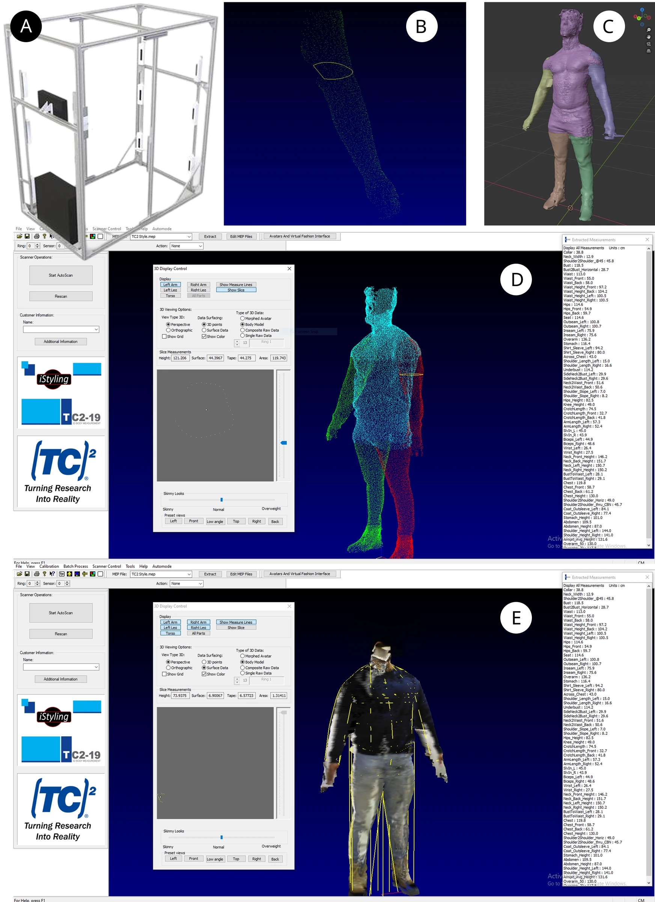
The scanner requires a significant physical footprint, though its enclosed design provides privacy for live human subjects. The scanning process is highly efficient; with minimal training, it can be operated by a single technician or self-operated by the subject. With regard to software functionality, the user interface is rudimentary, offering limited options for parameter adjustments. Mode selection merely dictates the number of automated measurements extracted rather than altering sensor behavior. However, the software successfully visualizes the generated point cloud and demonstrates robust performance in automated mesh generation (Figure 4.1 D). While the hardware supports color capture (Figure 4.1 E), the software only visualizes color within the proprietary UI. It fails to export color textures (e.g., UV maps) alongside the final 3D model. The system’s algorithmic silhouette recognition requires a strict, pre-defined rigid posture: arms abducted at approximately 30 degrees (Figure 4.1 C). Any deviation from this posture, or the introduction of non-standard geometries like a standalone printed arm model, disrupts the recognition parameters, frequently resulting in software errors.
The fixed horizontal orientation of the infrared sensors prevents the capture of surfaces perpendicular to the sensors (such as the axilla/armpit or crotch regions), which causes some problems with incomplete datasets, leading to significant occlusion and extrapolation errors (Figure 4.1 B). Moreover, the software relies on a cross-sectional measurement algorithm that travels strictly parallel to the transverse plane. While this produces acceptable approximations for vertically dominant structures like the torso or legs, it is highly inaccurate for the multi-axial geometry of the arms, leading to unreliable upper-extremity data.
Structure Sensor Mark II
Structure Sensor Mark II is a mobile, tablet-mounted structured light scanner (Figure 4.2 A). It projects an infrared grid to capture depth while utilizing the host iPad’s native RGB camera to capture image textures. Structured light inherently features a limited functional depth of field (typically 10 cm to 300 cm), requiring the operator to manually move the device around the subject to capture volumetric data.
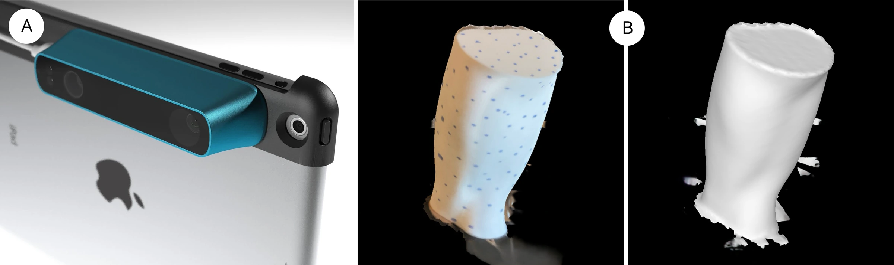
The accompanying application allows operators to manually adjust sensor sensitivity and depth range. Because the scan volumes are physically limited by the sensor’s tracking capabilities, the resulting point clouds are small, leading to highly efficient, rapid processing times. File management is streamlined, enabling rapid, direct-to-cloud exports of .obj files due to generally small file sizes associated with the scans.
The utilization of the iPad’s camera provides adequate texture mapping, though overall output quality remains inferior to higher-end tethered systems (Figure 4.2 B). Despite accessible settings, the hardware is difficult to manipulate smoothly around complex geometries, requiring a steep learning curve for the operator. Moreover, the scanner struggles to maintain spatial tracking during the slow, sweeping motions required to scan large or complete objects. Instability and loss of tracking are frequent, restricting the device to capturing localized, small-scale surface areas rather than a complete upper extremity in a single pass.
EinScan Pro HD
EinScan Pro HD is a tethered, handheld structured light scanner (Figure 4.3 A). It relies on a continuous projection of structured white light to map geometry. Unlike mobile scanners, it relies entirely on a physical connection to a high-performance workstation, utilizing NVIDIA CUDA architecture to process dense 3D meshes in real-time.
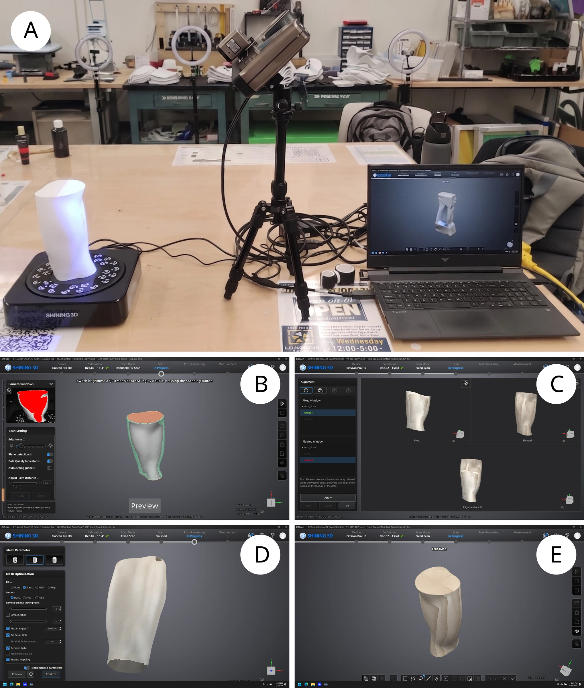
The setup requires dedicated power and data cables, making the scanning volume strictly dependent on cable length (Figure 4.3 A). However, the robust internal tracking software prevents the spatial disorientation observed in Sensor (Mark II). The continuous flashing of high-intensity white light can be highly uncomfortable or disorienting for live subjects, though this limitation is rendered moot when scanning inanimate phantom models. Furthermore, the scanner struggles significantly to register data on dark, highly reflective, or transparent surfaces due to the physics of light projection.
The scanner produces superior, industrial-grade quality output, achieving dimensional accuracy up to 0.2 mm. It is highly capable of capturing the intricate topology of the 3D printed arm. The proprietary software offers a comprehensive suite of post-processing tools prior to export. Users can perform manual mesh cleanup, hole-filling, coordinate alignment (Figure 4.3 B), cropping, and watertight mesh generation (Figure 4.3 C). While these steps extend total processing time, they yield a highly refined final model (Figure 4.3 D). Color texture capture is possible with a modular camera attachment.
EinScan Pro HD Scanner was found to be the best 3D scanner for this particular use case due to its high-quality output, portability, and high accuracy.
Polycam
Polycam is a mobile application that utilizes photogrammetry (and LiDAR, depending on device hardware) to reconstruct 3D models. It captures overlapping 2D images and uses cloud-based algorithmic triangulation to generate a 3D mesh. Because it relies heavily on image analysis, its efficacy is directly tied to the principles of optical photography. Polycam’s system operates on ubiquitous smartphone hardware, making it highly accessible with real-time feedback.
The scanning process takes approximately 1-2 minutes, and the intuitive UI provides real-time augmented reality (AR) feedback, visualizing the mesh overlay as data is captured. Because the primary data source is optical, uniform and well-diffused ambient lighting is absolutely critical. Poor lighting directly translates to poor geometry reconstruction.
Due to the massive computational load required for photogrammetry and LiDAR processing, data cannot be processed locally on the mobile device. Hence, all the data is uploaded to remote servers for mesh generation using cloud-based computing. The remote processing software yields excellent, highly polished outputs that generally require zero manual post-editing. However, the reliance on cloud computing introduces a significant bottleneck; uploading high-resolution image data and waiting for server-side processing typically takes 15 minutes or more per scan.
Both iOS and Android platforms produced comparable, high-quality models. Interestingly, the Android variant produced superior edge sharpness, better corner capture on the 3D printed model, and more accurate texture alignment than the iPhone variant, which leverages both photogrammetry and Apple’s native LiDAR depth mapping (compare Figure 4.4 versus Figure 4.5).
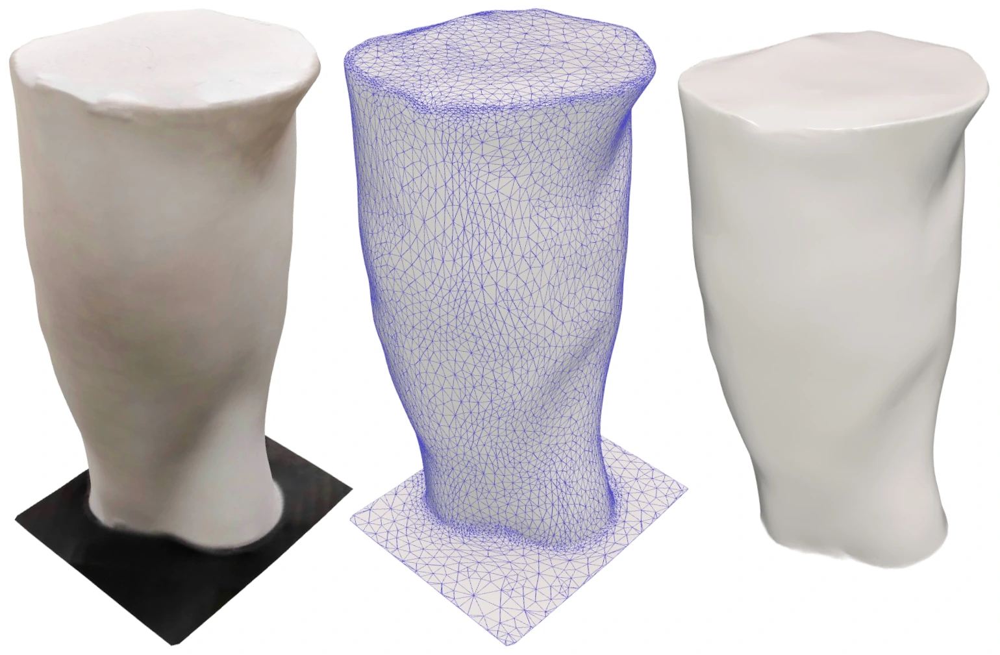
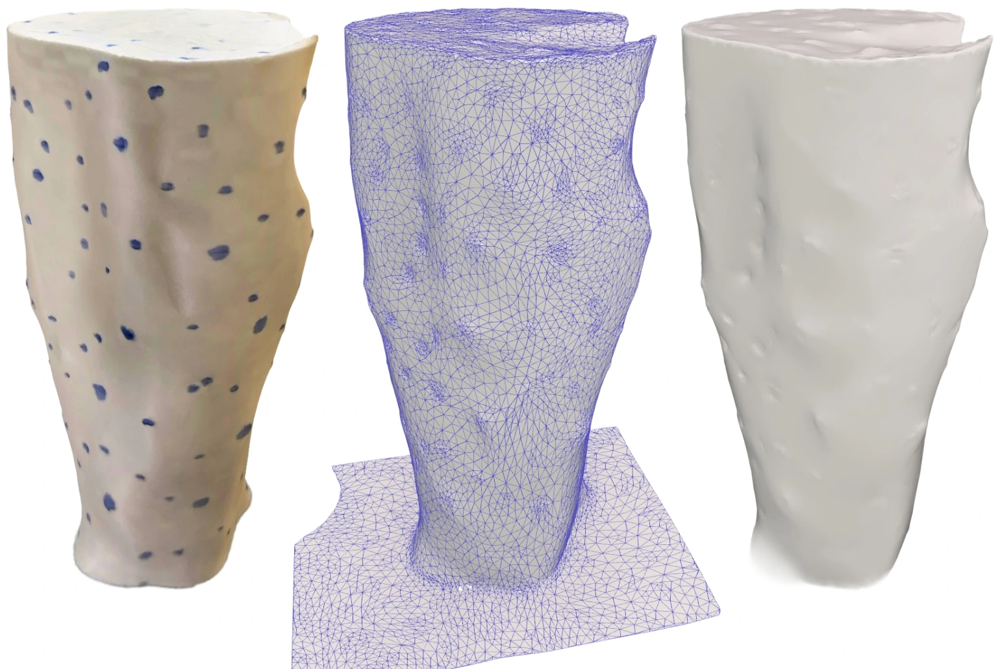
RealityScan
RealityScan is a mobile application, similar to Polycam, operating purely on photogrammetry algorithms. It extracts geometric data from a continuous sequence of overlapping 2D photographs processed via cloud servers. The operational workflow mimics other mobile photogrammetry applications, requiring manual circumvention of the subject by the operator and relying on external server processing.
Compared to hybrid systems that utilize both LiDAR and photogrammetry, RealityScan produced highly unsatisfactory outputs when capturing the upper arm model using its photogrammetry-only technology (Figure 4.6). Because the app lacks a secondary depth sensor (like LiDAR) to supplement its data, it is exceptionally vulnerable to environmental variables. Any inconsistencies in lighting, shadows, or lack of surface features on the 3D printed model lead to severe mesh degradation and failed topological generation.
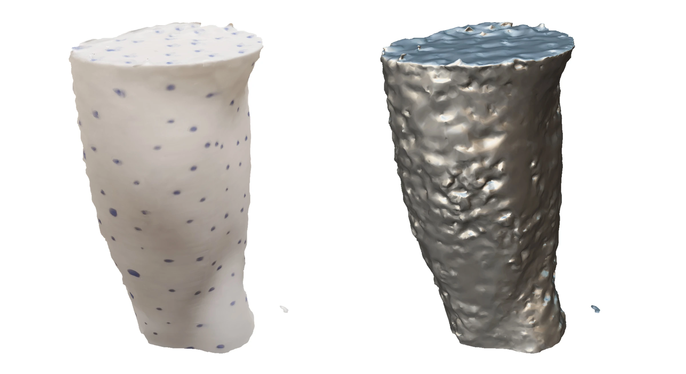
4.1.2Geometric Inspection
Establishing an acceptable sizing tolerance for smart textile armbands requires a compromise between the metrological accuracy of the scanning device and the functional fit requirements of the garment. For general anthropometric data collection, ISO 20685-1:2018 (International Organization for Standardization 2018) permits a maximum deviation of 9 mm between primary girths extracted from a 3D scan and the corresponding manual measurements. For applications that demand higher precision, such as ergonomic or close-fitting wearables, ISO 15535:2023 (General requirements for establishing anthropometric databases 2023) recommends that measurement variance be kept within ±5 mm. These two limits were adopted as the basis for a three-level tolerance scheme implemented in ZEISS Inspect: deviations within ±5 mm were classified as good (green), deviations between 5 mm and 9 mm as acceptable (yellow), and deviations exceeding 9 mm as unacceptable (red).
Figure 4.7 (a and b) summarises the resulting comparison. In each part, the left-hand column presents the continuous deviation of each scan from the reference upper-arm model as a colour-coded heat map. The central column shows the section-wise inspection of the target measurements, isolated for detailed analysis, and the right-hand column reports the corresponding three-level classification of pass (green), acceptable (yellow), and fail (red). With the exception of RealityScan (iPhone), all scanning systems satisfied the ±5 mm criterion recommended for close-fitting wearables. The EinScan Pro HD showed the closest agreement with the reference geometry, with a maximum local deviation of −0.56 mm.
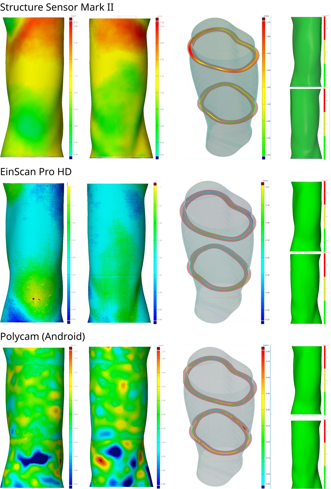
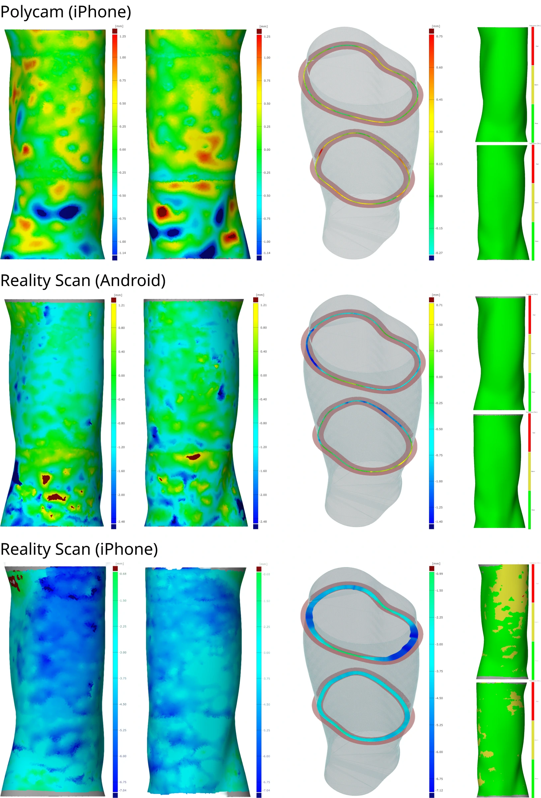
4.1.3Multi-Criteria Decision Analysis
To systematically determine the most suitable 3D scanning technology for the decentralized, custom wearable manufacturing framework, a Multi-Criteria Decision Analysis (MCDA) was conducted. The evaluation compares the four primary scanners: Structure Sensor Mark II (Mark II), EinScan Pro HD (EinScan), Polycam (representing the mobile photogrammetry application), and RealityScan. The stationary TC² 19M scanner was excluded from this comparative ranking, as it was unable to register the standalone 3D-printed control arm phantom, rendering a meaningful geometric comparison impossible.
The scanners were evaluated across six attributes: hardware and software cost (Cost), device portability (Portability), learning curve and ease of use (Learning Curve), quality of color texture support (Color Texture), total scan and processing time (Scan Time), and geometric accuracy (Accuracy). Geometric accuracy values are derived from the surface deviation results of the preceding geometric inspection, where the mean surface deviation of each scanner relative to the nominal CAD geometry was adopted. For RealityScan, the upper bound of its observed tolerance range (7.0 mm) was used, reflecting its worst-case performance in producing acceptable geometries. The raw decision matrix is summarized in Table 4.2.
| Attribute | Mark II | EinScan Pro HD | Polycam | RealityScan |
|---|---|---|---|---|
| Cost ($) | $528 | $8,399 | $150 | $0 |
| Portability (1-5)a | 4 | 1 | 5 | 5 |
| Learning Curve (1-5)b | 3 | 1 | 5 | 4 |
| Color Texture (1-5)a | 3 | 2 | 5 | 4 |
| Total Scan Time (min) | 2 | 15 | 10 | 20 |
| Geometric Accuracy (mm) | 1.5 | 0.2 | 2.0 | 7.0 |
| a Rated on a 1-5 scale, where 5 represents the best performance (most portable / highest texture quality). b Rated on a 1-5 scale, where 5 represents the lowest operational learning curve (easiest to use). | ||||
Noncompensatory Analysis: Lexicography
In a lexicographic decision model, attributes are ranked strictly in order of importance and alternatives are compared sequentially beginning with the highest-ranked attribute; no trade-offs between criteria are permitted. In the context of clinical wearables, if Geometric Accuracy is prioritized as the singular most critical attribute, the lexicographic ordering would be:
Accuracy ≻ Cost ≻ Portability ≻ Learning Curve ≻ Color Texture ≻ Scan Time
Comparing the scanners on Accuracy alone, the EinScan Pro HD (0.2mm) dominates all alternatives, leading directly to its selection. However, this outcome ignores the scanner’s $8,399 cost, tethered non-portability, and high training requirements.
Conversely, if user accessibility dictates that Cost is the primary attribute, the lexicographic choice resolves to RealityScan ($0). However, RealityScan produced surface deviations of 5-9 mm on the 3D-printed phantom, which approach or exceed the strict ±5 mm tolerance threshold established for close-fitting wearables, posing an unacceptable risk to fit fidelity. This illustrates the fundamental limitation of noncompensatory models as they produce all-or-nothing rankings that ignore critical performance trade-offs, yielding practically extreme and often unsuitable design choices.
Compensatory Analysis: Nondimensional Scaling and Additive Weighting
To overcome these limitations, a compensatory model employing Nondimensional Scaling with the Additive Weighting Technique was applied. All attributes were first standardized to a dimensionless scale ranging from 0 (worst performing) to 1 (best performing), allowing direct comparison across incommensurable units (Blank and Tarquin 2023). For desirable attributes (Portability, Learning Curve, Color Texture), where higher values are preferred, the nondimensional rating Ri is:
For undesirable attributes (Cost, Total Scan Time, Geometric Accuracy), where lower values are preferred, the rating is:
The resulting nondimensional scaled matrix is presented in Table 4.3. The overall weighted score for each alternative is then computed as S = ∑j wjRij, where wj is the weight assigned to attribute j (with ∑wj = 1), and Rij is the scaled rating of alternative i on attribute j. To assess robustness, three distinct weighting scenarios were evaluated: (A) equal weighting across all criteria; (B) an accuracy-focused scheme, prioritizing geometric fidelity for research-grade applications; and (C) a patient-centered scheme, prioritizing accessibility, portability, and low cost for decentralized deployment.
| Attribute | Mark II | EinScan Pro HD | Polycam | RealityScan |
|---|---|---|---|---|
| Cost | 0.937 | 0.000 | 0.982 | 1.000 |
| Portability | 0.750 | 0.000 | 1.000 | 1.000 |
| Learning Curve | 0.500 | 0.000 | 1.000 | 0.750 |
| Color Texture | 0.333 | 0.000 | 1.000 | 0.667 |
| Total Scan Time | 1.000 | 0.278 | 0.556 | 0.000 |
| Geometric Accuracy | 0.809 | 1.000 | 0.735 | 0.000 |
| (A) Equal Weights Score | 0.722 | 0.213 | 0.879 | 0.569 |
| (B) Accuracy-Focused Scorec | 0.757 | 0.414 | 0.868 | 0.492 |
| (C) Patient-Centered Scored | 0.720 | 0.214 | 0.921 | 0.667 |
| c Weights: Accuracy = 0.40, Cost = 0.20, Portability = 0.15, Learning Curve = 0.10, Color Texture = 0.10, Scan Time = 0.05. d Weights: Portability = 0.25, Learning Curve = 0.20, Cost = 0.20, Accuracy = 0.20, Color Texture = 0.10, Scan Time = 0.05. | ||||
Under all three weighting scenarios, Polycam emerges as the optimal scanning solution. Under the accuracy-focused weighting, Polycam achieves a score of 0.868, outperforming the Mark II (0.757) despite EinScan Pro HD’s superior geometric precision, because Polycam’s dominant advantages in cost, portability, and usability substantially compensate for its marginally higher deviation. Under the patient-centered weighting, Polycam achieves a score of 0.921, significantly outperforming the Mark II (0.720), RealityScan (0.667), and the EinScan Pro HD (0.214). Polycam’s geometric accuracy of 2.0 mm easily satisfies the ±5 mm tolerance threshold stipulated by General requirements for establishing anthropometric databases (2023) for close-fitting wearables, and its cloud-based photogrammetry pipeline requires no specialized hardware beyond a commodity smartphone, directly enabling the decentralized manufacturing paradigm proposed in this thesis.
4.2Measurement Extraction Phase
To abstract these complex modeling operations, a specialized proprietary add-on named “MeasureMe” was developed using Google’s Gemini 3.1 Pro powered code generation Large Language Model (LLM). MeasureMe adds a dedicated side panel to Blender’s interface that guides the user through a step-by-step measurement workflow. This eliminates the need for the user to perform complex 3D modeling operations manually, algorithmically isolating the upper arm region, retopologizing the mesh, and calculating the critical circumferential measurements required for the armband pattern.
The tool’s purpose is to provide a structured, semi-automated workflow for capturing dimensional data (for example, upper circumference, lower circumference, and band width) from a 3D scan of a body part, and then storing those measurements in an external spreadsheet for further processing. Figure 4.9 shows the MeasureMe Add-On’s UI in Blender’s viewport and figure 4.10 illustrates the step-by-step workflow of the add-on.
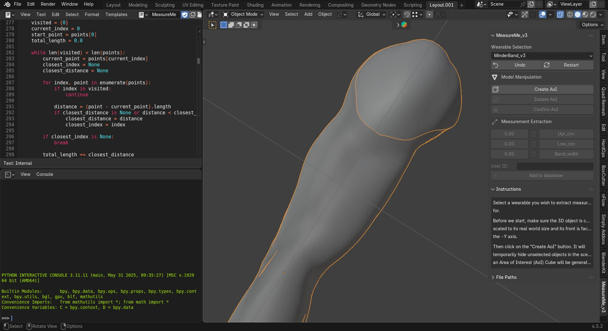
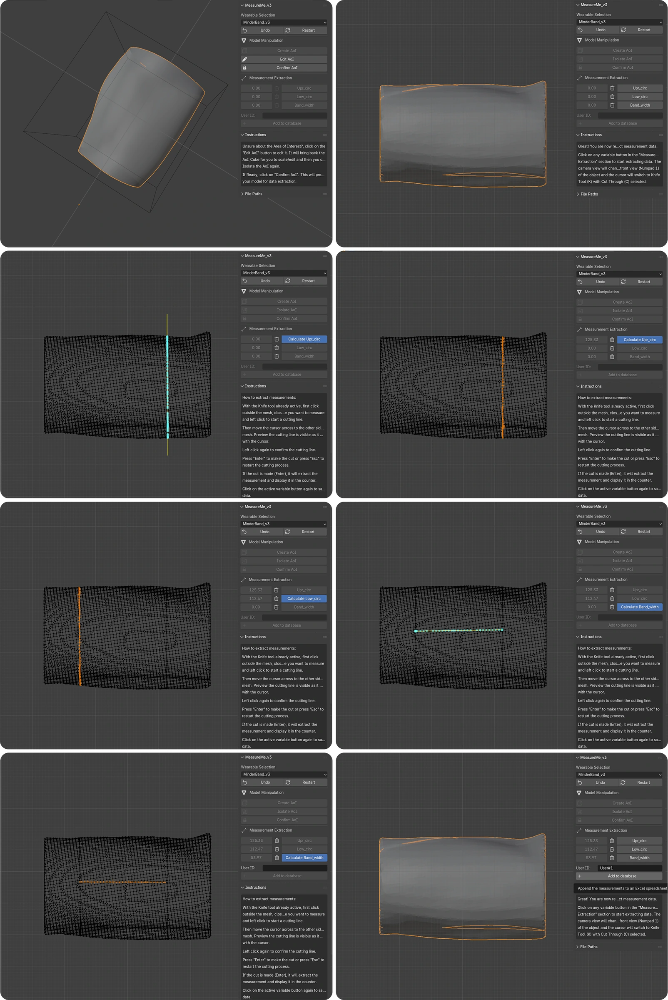
4.2.1How it works
The workflow proceeds through four guided stages, with the on-screen instructions updating at each step. The user first chooses the type of wearable they are measuring for. The other objects in the 3D scene are temporarily hidden so the user can focus on a single model. Then, the add-on places a small adjustable cube around the part of the model the user wishes to measure, to define an area of interest (AoI). The user resizes and positions this cube to enclose only the relevant region (for instance, the wrist area). Once the area is defined, the add-on temporarily trims the visible model so that only the portion inside the cube remains visible. The user can revise the region or confirm it. On confirmation, the original model is preserved as a hidden backup, and a clean working copy of the trimmed region is generated for measurement.
For each measurement variable, the user activates a button that automatically rotates the view to the front of the model and enables Blender’s built-in cutting tool. The user draws a line across the model where the measurement should be taken; the add-on then calculates the length of the resulting outline in millimetres by summing the distances between the points along the cut. The value is displayed in real time as the user works. Once all measurement values have been captured and a participant identifier has been entered, the user can append the results to an external Excel spreadsheet. The add-on automatically locates the next empty row, writes the participant ID and the three measurements, and then resets the workflow so the next model can be processed. The add-on also includes safeguards and a non-destructive workflow: it warns the user if no object (or more than one) is selected, provides Undo and Restart options to revert mistakes, automatically installs the spreadsheet-handling library if it is missing, and restores hidden objects and clears temporary data when the workflow is reset.
In summary, the script transforms Blender into a guided measurement instrument: the researcher loads a scanned 3D model, follows a series of clearly labelled prompts to mark the area of interest and trace the measurements, and obtains a tidy row of numerical data appended directly to a research spreadsheet, all without requiring expertise in 3D modelling.
4.3Armband CAD Design
4.3.1Parameterized Master Sketch Architecture
To ensure geometric consistency and permit real-time design validation, a “master sketch” modeling methodology was implemented in Autodesk Inventor Professional 2026. A single two-dimensional base sketch (Figure 4.11 A) serves as the primary geometric driver for the entire model. This master sketch defines the critical parametric relationships, formulas, and constraints governing all subsequent sketches and 3D features. This includes the outer fabric pattern, the thermoplastic polyurethane (TPU) carrier film, sensor and electrode window cutouts, conductive silver ink traces, silicone-based conductive adhesive pads, and Velcro attachment zones.
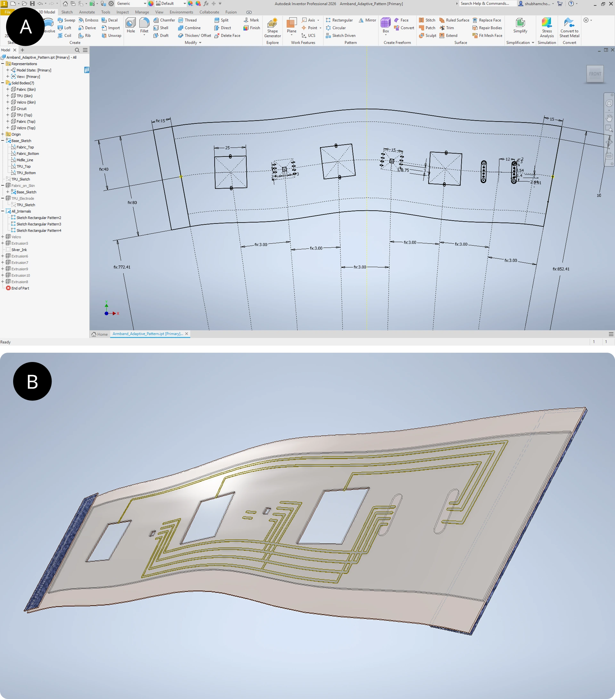
By structure-modeling the digital features in the exact chronological sequence of the physical fabrication pipeline, the CAD model functions as a digital twin (Figure 4.11 A). Crucially, the mathematical mapping of the sensor coordinates is linked directly to the sector’s angular spread θtotal. Because all spatial and mechanical dependencies are established in relation to this single base sketch, design rule checking (DRC), such as trace clearance, spacing margins, and boundary envelope constraints, can be audited and validated programmatically by parsing a single sketch configuration.
4.3.2Dynamic Database Synchronization
The parametric CAD model is dynamically coupled to the external “MeasureMe” anthropometric spreadsheet database. Autodesk Inventor’s native iLogic rule engine is configured to monitor the spreadsheet for modifications. When new patient biometrics (s₁, s₂, d) are extracted and appended to the database, the iLogic script triggers an automatic model regeneration. The script first reads the new numerical parameters. Then the base sketch dimensions are updated in real time. Next, the geometric solver recalculates the annular sector angle and the frequency-locked sinusoidal edges. Finally, the dependent 3D solid bodies (representing the multi-layered fabric/TPU/circuit stack) are rebuilt. This process autonomously outputs a personalized armband geometry custom-scaled to the user’s arm shape without requiring manual intervention from a CAD technician.
4.3.3Digital Manufacturing Translation and CAM Export
To facilitate automated fabrication, the parametric CAD model is structured to selectively export discrete manufacturing layers. When a specific processing step is executed by the workcell, such as the subtractive laser cutting of the base fabric or the additive dispensing of conductive silver ink, the CAD environment isolates the corresponding sketch or body layer. These isolated geometries are exported as vectorized paths (e.g., DXF or STEP files) and loaded into the RoboDK CAM plug-in. Within RoboDK, these pathways are converted into precise machine coordinates (G-code) (Figure 4.12) and robotic joint trajectories. The simulation environment then validates the toolpaths for reachability, singularity avoidance, and clash detection prior to committing the instructions to the physical robot, ensuring a safe and reliable digital-to-physical manufacturing handoff.
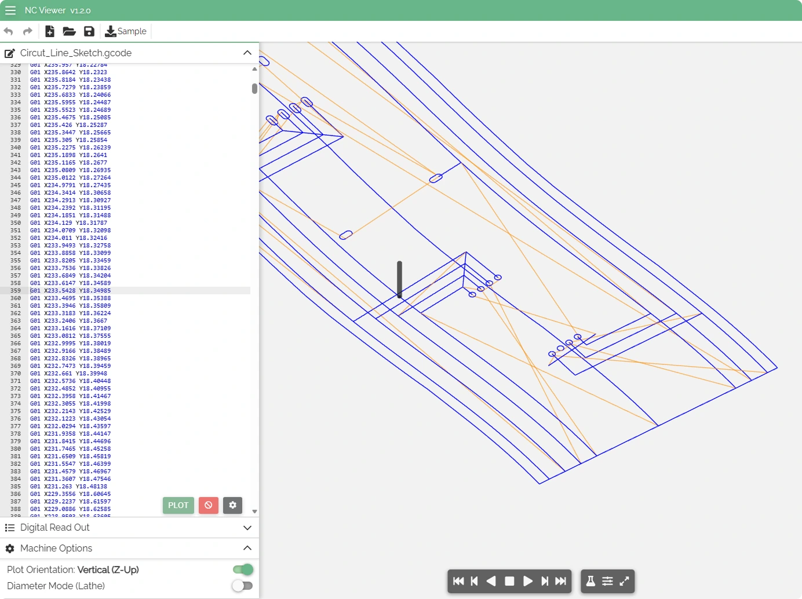
4.4Manufacturing and Assembly
To physically realize the bespoke wearables, a specialized, multi-functional manufacturing workcell was designed. The system consolidates material feeding, precise lamination, subtractive cutting, additive electronics printing, and pick-and-place assembly into a single compact footprint.
4.4.1Mechanical Structure and Frame
The structure of the machine is constructed using 45 × 45 mm heavy-duty T-slot aluminum extrusion profiles, providing a rigid, vibration-damping chassis. The frame is divided into a lower compartment and an upper workspace (figure 4.13). The lower compartment houses all static, non-moving support subsystems, including the central computer tower, system power supplies, pneumatic control manifolds, and other auxiliary electronics. This positioning keeps the upper workspace clean and reduces the overall center of gravity of the system.
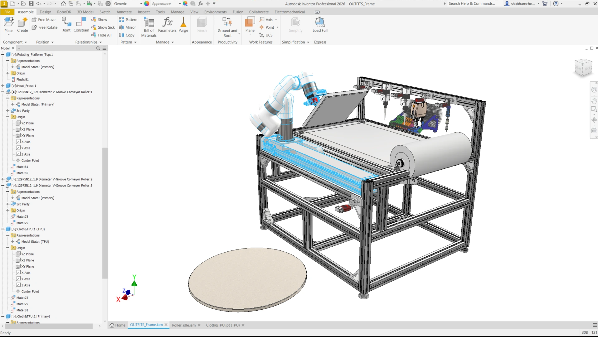
4.4.2Robotic Manipulator and Motion Axis
A 7-DOF robotic arm (xArm 7 by UFactory) serves as the primary system manipulator (Figure 4.14). To maximize the robot’s functional reach across the entire work envelope, the arm’s base is mounted onto a high-precision linear slide actuator that runs along the front long edge of the machine chassis. The robotic arm is equipped with an automatic tool changer (QC7 by ATI Industrial Automation) at the wrist, which provides reliable mechanical locking, power transmission (LM12 Electrical Module by ATI Industrial Automation), and pressurized air routing to support various specialized end-effectors. Additionally, a computer vision camera (Intel® RealSense™ D435) is mounted to the robot’s wrist to assist in active alignment and quality inspection during processing.
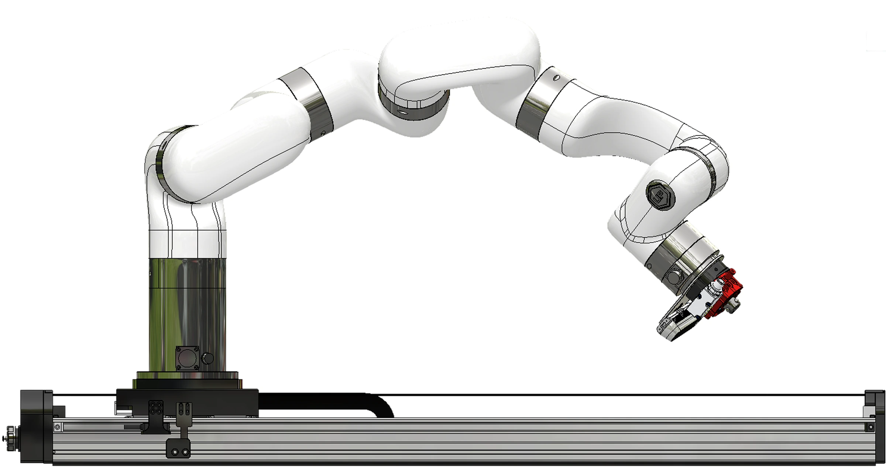
4.4.3Tool Shelf and Component Feeders
Opposite the robotic track along the back long edge of the chassis, a tool storage shelf houses the end-effector inventory (Figure 4.15). The rack uses ATI Industrial Automation’s Hook and Hanger docking accessories, each integrated with an LM12 electrical connector module to supply power and control signals to docked tools. The available end-effectors include:
- A CO₂ laser used for cutting synthetic fabrics and TPU layers, as well as providing localized thermal energy for curing conductive paths.
- A precision volumetric fluid dispenser (FD High-V by AIM Robotics) optimized for viscous silver-flake ink deposition.
- A secondary syringe dispenser identical to the ink dispenser, dedicated to depositing silicone-based conductive adhesive.
- A robotic gripper (Gripper V2 by UFactory) used for grasping and manipulating fabric layers.
- A vacuum-nozzle-based tool for extracting electronic components (sensors and electrodes) from a component tape reel library is mounted directly behind the tool rack.
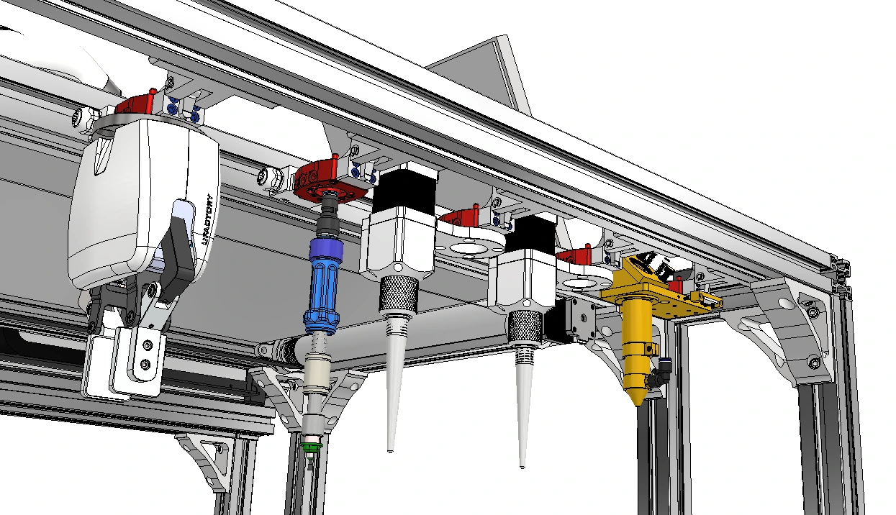
4.4.4Conveyor and Material Handling
The central workspace is built around a heat-resistant, sticky conveyor belt system (Figure 4.16). The belt surface features a specialized sticky coating that acts as a continuous fixture, securing flexible fabric and TPU layers flat and stationary to prevent shifting during laser cutting or printing. Along the right short edge of the chassis, base fabric and TPU film spools are mounted to spool rollers. Motorized and idle pressing rollers feed the materials onto the conveyor, pressing them onto the sticky conveyor surface to ensure uniform lamination. At the opposite (left) short edge of the conveyor, a flat-bed heat press is integrated. To perform lamination or encapsulation, the robotic arm slides along the linear actuator, clamps onto the heat press handle, depresses the heated plate against a support surface positioned 2 mm beneath the conveyor belt, and returns the handle to the open position upon completion.
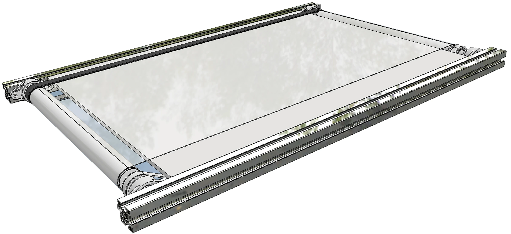
4.4.5Anthropometric Scanning Station
Adjacent to the robotic linear track (positioned at the front-right of the machine), a 3D scanning station is integrated to capture patient biometrics. The station consists of a circular platform designed to rotate slowly at approximately 2 RPM and an interactive computer screen. Safety handlebars are provided for the subject to maintain balance during rotation. A movable articulating arm mounts the primary computer screen, providing an interactive interface for the user to initiate the scanning process, and for the operator to analyze the generated meshes and coordinate the manufacturing pipeline. To perform a scan, the robotic arm retrieves the handheld 3D scanner (EinScan Pro HD by SHINING 3D) from a dedicated docking station at the front-right edge of the chassis, and performs a volumetric scan as the platform rotates.
4.5User Journey and System Integration
To demonstrate how the anthropometric data extraction, parametric CAD modeling, and robotic manufacturing workcell integrate into a seamless pipeline, this section outlines the end-to-end user journey. The workflow bridges the digital-physical divide, converting raw biological dimensions into a finished, functional, and custom-fit physiological monitoring device. The process is divided into four distinct stages, operating under a unified data flow.
4.5.1Stage 1: 3D Anthropometric Data Acquisition
The journey begins at the workcell’s scanning station. The subject stands on the scanning platform, holding the safety handlebars. On the control screen, the operator initiates the scanning sequence. The robotic manipulator, equipped with the EinScan Pro HD scanner, is retrieved from its dedicated dock. As the platform rotates slowly at 2 RPM, the robot automatically adjusts its vertical position to capture a dense, high-fidelity point cloud of the subject’s upper extremity. This process takes approximately 30 seconds and outputs a 3D mesh representing the exact geometry of the subject’s arm.
4.5.2Stage 2: Biometric Data Extraction via MeasureMe
The raw 3D mesh is imported into Blender, where the proprietary ‘MeasureMe’ add-on simplifies the extraction process for the operator:
- The operator selects “Armband” from the wearable configuration menu.
- An Area of Interest (AoI) bounding box is generated. The operator matches the box bounds to the upper arm region.
- The mesh is isolated and retopologized.
- Using the guided cutting tool, the operator traces the upper and lower boundaries of the target placement site.
- The script automatically calculates the upper circumference (s₁), lower circumference (s₂), and the longitudinal band width (d) in millimeters.
- The operator enters a unique participant identifier, and the measurements are appended directly to the central Excel database.
4.5.3Stage 3: Parametric CAD Scaling and Toolpath Generation
Upon database update, Autodesk Inventor Professional 2026 automatically imports the new biometric dimensions:
- The parametric base sketch of the armband updates its variables (s₁, s₂, d) dynamically.
- The mathematical model unrolls the tapered 3D frustum into a 2D annular sector with frequency-locked sinusoidal edges.
- All dependent layers (base fabric, TPU interface, silver traces, electrode cutouts, and encapsulation film) scale proportionally.
- The CAD file automatically updates the geometric boundaries and outputs the coordinate systems for the sensor placements.
- The RoboDK plug-in reads the updated 3D design and generates the robot trajectories, tool configuration indexes, and G-code. A digital simulation is executed to run design rule checks and ensure that no structural collisions will occur during fabrication.
4.5.4Stage 4: Robotic Material Handling and Lamination
The validated instructions are sent to the machine controller to begin fabrication as depicted in Figure 4.17:
- Motorized rollers feed the base fabric onto the sticky, heat-resistant conveyor belt, followed by the first layer of TPU film. Idle rollers press the stack flat.
- The robot equips the laser cutting toolhead, cutting the custom annular armband profile and separating it from the feed rolls.
- The conveyor indexes the fabric-TPU stack to the heat press.
- The robot moves to the press handle, clamps it, and applies calibrated thermal pressure to laminate the TPU interface to the fabric base. The conveyor then returns the laminated substrate to the center workspace.
- With the substrate prepared, the robot initiates circuit assembly by using the laser cutting toolhead to cut precise window cutouts for the skin-facing electrodes and sensors.
- The robot swaps to the vacuum pick-and-place nozzle to remove and discard the fabric-TPU cutouts.
- The robot swaps to the DIW syringe dispenser, printing the conductive silver-flake traces directly onto the TPU layer along the parameterized path.
- The laser toolhead is retrieved to selectively heat and cure the printed silver traces.
- Conductive adhesive is dispensed onto the circuit junction contacts.
- The robot uses the pick-and-place nozzle to extract components (electrodes and sensors) from the tape library reels and place them into the pre-cut substrate windows.
- The laser is reapplied to cure the conductive adhesive, establishing durable electromechanical bonds.
- Finally, an upper encapsulation TPU layer and top fabric cover are rolled onto the workspace. The conveyor indexes to the heat press for a final thermal seal cycle, encapsulating the electronics.
- The finished custom armband is then ejected, ready for patient deployment.
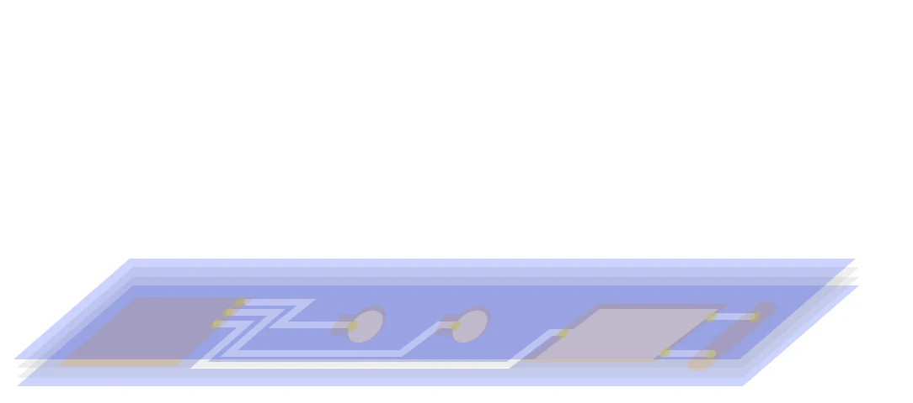
Discussion
5.1Analysis and Recommendation of 3D Scanning Systems
The comparative evaluation of 3D scanning technologies presented in Section 4.1 highlights the distinct trade-offs between hardware architecture, computational requirements, and overall user accessibility. To assist designers, researchers, and manufacturers in selecting the optimal scanning system for personalized wearable production, a recommendation matrix has been developed (Table 5.1).
| User Profile | Recommended System | Primary Technology | Output Quality / Precision | Approximate Capital Investment | Key Rationale & Context |
|---|---|---|---|---|---|
| Personal & Small Business | Polycam / Mobile Photogrammetry | Passive Photogrammetry & LiDAR (hybrid on iOS) | Moderate to High (1.0-3.0 mm) | Low (Leverages existing consumer smartphone) | Negligible startup cost; rapid capture cycles; cloud processing eliminates workstation needs. High usability for non-technical users. |
| Academic Research | EinScan Pro HD | Active Structured White Light | Extreme (up to 0.2 mm dimensional precision) | Medium ($5,000-$8,000 + GPU workstation) | High resolution captures fine skin/phantom surface variations. Offline post-processing suite allows detailed geometric audit. Tethering is acceptable for laboratory trials. |
| Commercial Mass-Customization | TC2 19M (or equivalent Booth) | Active Structured Infrared Light Array | High (1.0-2.0 mm volumetric) | High ($15,000-$40,000 + physical booth footprint) | Standardized enclosure protects patient privacy. Automated macro-measurement extraction; rapid 3-second capture. Requires strict postural alignment. |
5.1.1Personal and Small-Scale Business Scenarios
For independent designers and small businesses, minimizing capital expenditure is critical. Mobile-based applications like Polycam represent a highly disruptive solution. By leveraging existing smartphone sensors and outsourcing photogrammetry processing to cloud servers, these applications remove the necessity for expensive high-performance workstations. The hybrid use of LiDAR and photogrammetry on modern iOS devices provides sufficient edge sharpness and volumetric fidelity to inform parametric CAD models. The primary trade-off is processing latency, as waiting for cloud reconstruction (typically 15 minutes) limits real-time production throughput.
5.1.2Academic Research Scenarios
Academic environments require extreme precision to model biomechanical interactions and evaluate sensor positioning. Handheld structured-light systems like the EinScan Pro HD are optimal because they achieve sub-millimeter (up to 0.2 mm) dimensional accuracy. This accuracy allows researchers to audit tiny tissue deformations or evaluate subtle variations in the phantom printed arm. While the continuous flashing of white light can induce subject discomfort, this is manageable within a laboratory setting where safety and data control are prioritized over consumer convenience.
5.1.3Commercial Mass-Customization Scenarios
In commercial mass-customization workflows, where throughput and cycle time are the primary operational constraints, the ability to capture the entire body in a few seconds and automatically generate point clouds is highly sought. Structured infrared light-based stationary 3D scanning booths, such as the TC2 19M, have been the industry standard due to this very capability. However, the high capital cost and large physical footprint restrict their use to centralized retail or clinical hubs. Furthermore, their fixed sensor paths introduce occlusion in transverse planes (like the axilla or inner limbs), making handheld or mobile scanning a potential supplement for targeted upper-extremity or lower-extremity wearables. Such additional steps impede the total scanning speed and consequently render the technology unimplementable at a commercial scale.
To mitigate these systematic tracking gaps, current industrial workflows must either be augmented by hybrid scanning methods like utilizing auxiliary handheld structured-light or mobile photogrammetry sensors to capture occluded geometries or require the development of novel, dynamic sensor-positioning mechanisms capable of tracking complex anatomical contours.
5.2Scan Accuracy and Tolerances for Wearable Integration
A critical question in the design of personalized textile-based Healthcare Wearable Devices (tbHWDs) is the relationship between digital scan accuracy and physical device efficacy. While metrology-grade scanners offer sub-millimeter precision, the physical properties of textiles and biological tissues redefine what constitutes an “acceptable” error margin.
- Unlike rigid mechanical assemblies, e-textiles are fabricated from highly compliant elastomeric knits (e.g., neoprene or spandex-nylon blends). These materials exhibit significant elastic deformation under load. Small variations in scan dimensions (e.g., a 1.0-3.0 mm error in circumferences s₁ or s₂) are easily absorbed by the stretch and recovery behavior of the fabric.
- The subtractive laser-cutting process and the lamination steps introduce physical tolerances. High-temperature heat pressing (needed to fuse the TPU carrier film to the fabric) causes localized thermal shrinkage of up to 1.5% in synthetic textiles. Attempting to maintain sub-millimeter tolerances throughout this process is counteracted by the inherent instability of the soft materials.
- The human upper arm does not represent a static volume. Muscle contraction (flexion of the biceps and triceps brachii) along with cardiovascular changes and fluid retention causes localized circumference variations of up to 5% (approximately 10-15 mm) during daily activities.
- For physiological sensors (e.g., dry electrodes for heart rate or electromyography), consistent contact pressure is vital to minimize electromechanical impedance. If the scan is too small, the resulting band will exert excess pressure, causing tissue ischemia, user discomfort, and eventual sensor migration. If the scan is too large, the band will slip, causing motion artifacts and signal loss.
Therefore, for the smart armband application, a scan-to-model dimensional tolerance of ±1.5 mm to ±3.0 mm should be the practical and acceptable standard. This tolerance falls well within the capabilities of accessible mobile LiDAR/photogrammetry platforms, establishing that low-cost mobile scanning is a viable entry point for personalized healthcare monitoring.
5.3Best Practices for High-Fidelity Anthropometric Scanning
To ensure reproducible, errorless, and high-quality 3D scanning of human limbs, a standardized protocol must be established. The following guidelines help mitigate the common tracking losses, extrapolation errors, and mesh degradation observed in the results chapter.
Posture
Subjects must maintain a rigid, relaxed posture. For upper-extremity scanning, the arm may be abducted at approximately 30° from the torso with fingers slightly splayed. This posture isolates the arm contour and minimizes occlusion under the armpit (axilla), preventing the mesh extrapolation errors that occur when the scanner tries to interpolate missing geometry.
Lighting
Uniform, diffused ambient lighting is essential. Direct sunlight or directional spotlighting creates harsh shadows and specular highlights on the skin or fabric. These visual artifacts disrupt photogrammetry software algorithms, which rely on identifying common features across overlapping images.
Helical path
When operating a handheld structured-light scanner or a mobile camera, the operator should move in a continuous, smooth helical path around the subject. Abrupt movements or sudden changes in distance disrupt the spatial tracking algorithms, causing tracking loss and misaligned mesh geometry.
Markers
Low-texture surfaces, such as uniform, light-colored skin or a smooth 3D printed plastic, offer few features for photogrammetry tracking. Placing small, non-reflective markers (e.g., temporary paper targets) on or around the target limb provides high-contrast reference points, stabilizing tracking.
Clothing
Ideally, the subjects should not wear any form of clothing on the target area during scanning so that true surface contours of the body can be captured. Loose-fitting as well as compression-wear clothing distorts the extracted measurements, leading to oversized CAD dimensions and poor fit.
5.4Comparative Evaluation of Measurement Extraction Paradigms
The custom ‘MeasureMe’ Blender add-on represents one approach to extracting localized anthropometric measurements. However, several other methodologies exist within the digital design landscape, each presenting unique trade-offs. Table 5.2 presents a comprehensive comparison of some methods.
| Method | Pros | Cons |
|---|---|---|
| MeasureMe Add-on (Proposed)LLM-assisted semi-automated slicing tool in Blender that guides users to draw boundary lines on isolated meshes. | User-friendly interface; guide-driven; operates within open-source Blender. Appends data directly to local spreadsheet databases. | Requires manual slicing input. Susceptible to minor operator variations in line drawing. |
| Automated Body Template FittingAlgorithmic fitting of a standardized statistical human body model (e.g., SMPL or SCAPE) to the captured raw point cloud | Fully automated. Eliminates operator variance. Robust to holes or noise in the raw scan mesh. | High computational complexity. Requires advanced machine learning libraries. Struggles with localized, non-standard phantom prints. |
| Manual CAD Virtual TapeManual measurement in commercial CAD platforms (e.g., Inventor, Meshmixer) using standard ruler and cross-section slicing tools | No custom code or programming required. Compatible with standard CAD tools. | Highly repetitive. Extremely slow. High operator variance. Lacks database integration. |
| 2D Silhouette AnthropometryComputational estimation of circumferences using front and side orthogonal photographs of the subject | Simplest user journey. Fast capture. No 3D hardware required. | Inferior accuracy. Fails to capture complex non-linear surface contours. Highly sensitive to posture and clothing thickness. |
5.5Expanded Use Cases of the MeasureMe Framework
While the smart armband for opioid withdrawal monitoring serves as the primary case study, the underlying computational architecture of ‘MeasureMe’ is highly modular. The system’s ability to isolate an Area of Interest (AoI), clean and retopologize meshes, and extract planar cross-sectional dimensions can be adapted to several fields.
- Compression garments. Patients suffering from severe burns, lymphatic disorders (e.g., lymphedema), or deep vein thrombosis (DVT) require custom-fit compression garments to apply precise therapeutic pressure. The ‘MeasureMe’ pipeline can scan the affected limbs, extract continuous circumference metrics, and generate flat patterns optimized for pressure profiles.
- Orthopedic braces. Traditional orthopedic braces (e.g., wrist, knee, or ankle stabilizers) use generalized sizing that can cause skin irritation or pressure sores. By scanning the limb and exporting parametric geometries via the Excel-Inventor bridge, manufacturers can fabricate custom-molded rigid polymer shells or soft-knit supports that fit the user’s anatomy perfectly.
- Protective equipment. High-performance athletes require protective equipment (e.g., custom helmets, shin guards, or chest protectors) that fits closely to maximize impact dissipation. ‘MeasureMe’ can extract anatomical contours to guide additive manufacturing or custom thermoforming of foam liners.
- Bespoke apparel. Beyond medical devices, the pipeline could be integrated into automated commercial apparel systems, allowing consumers to scan their bodies using a mobile device, extract tailors’ measurements, and automatically generate personalized sizing patterns for high-end bespoke suits, jeans, or underwear.
5.6Synthesis of Electromechanical and Material-Process Interactions
The success of the proposed personalized manufacturing pipeline depends on matching the digital CAD model to physical material and processing limits. The master sketch in Autodesk Inventor Professional 2026 serves as the digital link that ensures these relationships are validated before fabrication.
The use of frequency-locked sinusoidal waves for the armband boundaries, as defined in Equations (7) and (8) (Section 3.5.2), is not purely aesthetic. Standard straight-edged, cylindrical bands suffer from concentrated shear stresses along the edges during arm movement. Splay and muscle deformation during biceps contraction push the edges outward, causing the band to slip down. The sinusoidal boundaries allow the fabric to expand and contract dynamically along these wave shapes, distributing tension evenly. This stabilizes the internal printed traces and maintains the contact pressure needed for high-quality sensor signals.
Direct Ink Writing (DIW) uses a highly viscous silver-flake ink suspended in a TPU binder. Curing the silver ink to achieve low sheet resistance (≈0.08 Ω/m) requires solvent evaporation and polymer chain cross-linking. While furnace curing of such inks typically requires temperatures of 120°C to 150°C for 30 minutes, synthetic fabrics and TPU films experience thermal degradation, softening, or catastrophic melting at these ranges. By using a localized laser heating toolhead mounted to the xArm 7 robotic manipulator, thermal energy is focused directly on the silver traces. This cures the conductive network in seconds while keeping the surrounding fabric and TPU carrier intact.
Encapsulating the printed silver traces within a TPU-fabric sandwich protects the conductive paths from moisture and abrasion during washing. The Inventor master sketch models this sandwich construction in chronological order. This setup allows RoboDK to plan toolpaths that coordinate the laser cutting, ink dispensing, and heat pressing steps, preventing alignment errors.
5.7Addressing Research Motivations
To evaluate the overall success of the proposed personalized wearable manufacturing pipeline, it is essential to discuss how the system design directly addresses the three core research motivations established in the introduction:
5.7.1Integration of 3D Anthropometry and Parametric CAD for Optimal Fit
The first research motivation investigated the dynamic integration of 3D anthropometric data with parametric CAD models to optimize sizing and skin contact. This was successfully achieved through the coordination between the custom ‘MeasureMe’ Blender add-on and the Autodesk Inventor parametric master sketch. By converting raw 3D scan meshes into localized cross-sectional circumferences (s₁ and s₂), the digital-physical dimension gap was bridged. The Inventor model dynamically consumes these measurements from the spreadsheet database, scaling the 3D geometry of the armband automatically. This parametric linkage ensures that the circumference of the fabricated armband is tailored to the specific user’s anatomy, which is critical for maintaining consistent contact pressure for dry electrodes while preventing slip or excessive tissue compression.
5.7.2Reduction of Manual Assembly Errors via Automated Fabrication Workflows
The second research motivation focused on reducing manual assembly times and errors through automated, multi-tool digital fabrication workflows. This objective was achieved by configuring the xArm 7 robotic manipulator with interchangeable toolheads for laser cutting, Direct Ink Writing (DIW) of silver conductive inks, and localized curing. By automating these tasks, the pipeline removes human assembly variability, such as inconsistent tool pressures or alignment shifts during lamination. The digital programming of these toolpaths in RoboDK ensures sub-millimeter positioning repeatability, directly decreasing cycle times and eliminating the alignment and deposition errors common to manual e-textile construction.
5.7.3Synthesis of Subsystems into a Unified Automated Pipeline
The final research question sought to synthesize the scanning, design, and physical fabrication subsystems into a single automated manufacturing pipeline. This synthesis was realized by establishing a continuous digital thread. The pipeline operates as an integrated system: the 3D scanning mesh outputs feed the ‘MeasureMe’ extraction tool, which updates the Excel database; this database immediately recalculates the Inventor CAD model; finally, the updated CAD geometries are translated into motion profiles for the xArm 7 robotic system. By linking these separate software and hardware layers, the thesis demonstrates a unified, automated personalized wearable manufacturing pipeline, moving from a live human body scan to a finished, customized e-textile device without manual model redesign.
Limitations
6.1Conceptual Nature of the Automated Manufacturing Pipeline
A primary limitation of this research is that the entire automated manufacturing workcell and the associated fabrication pipeline (described in Section 3.6 and Section 3.7) currently exist at a conceptual, digital-only stage.
The proposed multi-axis robotic arm xArm 7, linear slide actuator, automatic tool changer, specialized material dispensers, sticky conveyor belt, and integrated heat press have not been physically assembled or tested. The system exists solely in digital computer-aided design formats (Autodesk Inventor Professional 2026) and kinematic simulation environments (RoboDK).
While the digital twin simulation validates toolpaths, reachability, and collision avoidance, it cannot account for real-world mechanical variables such as physical wear and misalignment of the robotic tool changer (ATI QC7) after repeated cycles, variations in vacuum pressure during pick-and-place operations and the behavior of highly flexible, “limp” textiles and thin TPU films as they are rolled, cut, and indexed on the conveyor belt. Under physical conditions, these materials are prone to stretching, wrinkling, and static charging, which can disrupt precision alignment.
The actual realization of this physical workcell requires substantial capital investment for hardware, precision machining of custom spools, and extensive commissioning time. Consequently, the physical viability and operational efficiency of the localized micro-factory remain theoretically sound but practically unproven.
6.2Lack of Human Usability and Biocompatibility Testing
While the parametric CAD model successfully scales the armband based on extracted body dimensions, the physical comfort and long-term wearability of the finished device have not been evaluated.
There have been no user trials where human subjects have worn the proposed laminated fabric armband. Consequently, there is no empirical data regarding user comfort, thermal breathability, or psychological acceptance during daily activities.
The smart armband combines synthetic textiles, Thermoplastic Polyurethane (TPU) adhesive films, silver-flake ink, and silicone conductive adhesives; hence, the biocompatibility of the encapsulated stack needs to be tested for wearability. Although the dry electrodes are designed to contact the skin, the surrounding laminated TPU-fabric stack is non-porous. Wearing a non-breathable, elastomeric band around the upper arm for extended monitoring (e.g., during continuous opioid withdrawal tracking) could trap sweat, leading to localized skin irritation, contact dermatitis, or accelerated sensor degradation.
The closure mechanism of the arm band has not been addressed in the manufacturing pipeline and the elasticity of the band has not been evaluated. If the band is difficult for patients to wear or adjust independently, compliance will drop, undermining the therapeutic goals of the device.
6.3Geometrical Approximations vs. Organic Contours
The mathematical model used to generate the 2D pattern (Section 3.5.2) relies on approximating the human upper arm as a conical frustum with frequency-locked sinusoidal edges. This simplification introduces geometric limitations.
The model assumes the upper arm is a symmetric conical frustum with a straight-line taper between an upper circumference (s₁) and a lower circumference (s₂) separated normally by a distance (d). However, the human upper arm is highly organic and asymmetric, characterized by the irregular bulges of the biceps and triceps brachii muscles and localized adipose tissue.
When a user contracts their arm muscles, the contour changes dynamically and non-linearly. A simple conical frustum pattern with a uniform radial distance (d) cannot deform to match these asymmetrical changes. This mismatch can lead to Localized Gapping, where the sensor loses skin contact as the arm moves, and Localized Pinching, where the band constricts the arm, causing discomfort and shifting.
It remains an open question whether the conical frustum approximation is “good enough” for everyday wearability, or if the design must utilize the highly complex, organic 3D mesh unwrapping process (described in Section 3.5) to achieve a stable fit. The trade-off between geometric simplicity (which streamlines CAD parameterization and G-code generation) and organic precision requires physical testing to resolve.
6.4Additional Systemic Limitations
Beyond the primary design and pipeline challenges, several other limitations affect the proposed e-textile system. Although the literature suggests that the bilayer TPU sandwich encapsulation strategy protects silver ink traces for up to 50 washing cycles (Section 3.5.3), direct silver-flake traces printed onto TPU carriers are prone to mechanical fatigue. Repetitive arm movements (bending and stretching) create micro-cracks in the cured silver network. Over time, these micro-cracks cause a permanent increase in electrical resistance, eventually leading to open-circuit failures.
The interface where the highly flexible textile circuit meets the rigid sensors and electrodes is a critical failure point. Even with conductive adhesives, the sudden difference in material stiffness creates extreme stress concentrations under strain at the rigid-soft boundary. Repeated stretching of the armband can cause the rigid components to peel away from the soft TPU carrier, breaking the electrical connection.
The ‘MeasureMe’ Blender add-on (Section 4.2) is designed to simplify anthropometric extraction. However, it still requires manual operator input to align the Area of Interest (AoI) bounding box and to draw the slicing line across the arm mesh. This manual process introduces human error and variance. Different operators may select slightly different anatomical landmarks, leading to inconsistent measurement values for the same 3D scan and causing variation in the resulting parametric armband size.
The manufacturing pipeline relies on synthetic fabrics (such as polyester, nylon, or neoprene blends) that melt and fuse under heat and laser energy as the substrate material. The process is incompatible with natural fibers like cotton, wool, or silk. Natural fibers do not bond with TPU film under standard heat press conditions and can scorch or burn under CO₂ laser cutting, limiting the material options for patients with synthetic fiber sensitivities.
Future Work
7.1Automated Software Integration Bridge
To streamline the end-to-end user journey and reduce manual intervention, the software pipeline requires a transition from a semi-automated workflow to a fully integrated, automated software bridge.
Currently, the scanner must export the 3D mesh before the operator manually imports it into Blender. Future development will implement a Python-based background process or folder watcher that monitors the scanner’s export directory. As soon as a watertight mesh is generated, it will be automatically loaded into the ‘MeasureMe’ environment.
To eliminate operator variance during the measurement phase, the manual slicing step should be replaced with automated landmark detection. Using machine learning models (such as deep neural networks trained on human meshes) or geometric analysis (curvature maps), the software will automatically locate anatomical landmarks.
Once the landmarks are detected, the system will slice the mesh and extract dimensions automatically. This data will be written to the central database, triggering Inventor’s iLogic script to update the CAD model and export the toolpaths (G-code) via RoboDK without human operator interaction. This seamless bridge will reduce the total design time from minutes to seconds, paving the way for point-of-care, real-time customization in clinics and stores.
7.2Multi-Dimensional Armband Geometric Refinement
The current mathematical model (Section 3.5.2) approximates the upper arm as a single conical frustum. To accommodate the muscular deformation of the biceps brachii during flexion, future iterations will refine the geometry. Rather than using only the upper and lower circumferences, the design can incorporate a fourth dimension: the mid-arm circumference at the point of maximum bicep muscle thickness. This will divide the band into a double conical frustum or bi-conical profile.
A bi-conical geometry will mirror the physical contour of the contracted bicep. This shape will prevent the band from sliding toward the elbow during movement, maintaining stable contact pressure on the skin without over-tightening.
The frequency-locked sinusoidal waves could also be expanded to allow different amplitudes at different angles. This modification will help accommodate localized muscular expansion, providing a more comfortable, customized fit.
7.3Physical Prototyping and Workcell Commissioning
Building the physical manufacturing workcell would be the next phase of this research. The first step would involve constructing the aluminum chassis, installing the linear slide actuator, mounting the xArm 7 robotic manipulator, and fabricating and calibrating custom end-effectors including the laser toolhead, Direct Ink Writing (DIW) dispensers, and pick-and-place nozzles, followed by commissioning the tacky conveyor belt system to ensure it can roll, cut, and index fabric and TPU layers without causing wrinkles or alignment shifts, and then testing the heat press lamination times and laser curing parameters (wavelength, power, and feed rate) on various synthetic textiles to establish the optimal curing balance without causing thermal damage.
7.4Next-Generation Wearable Materials and Components
To improve the durability and washability of the printed circuits, future work will explore alternative materials. Rather than relying on silver-flake ink (which is prone to cracking), the circuits could utilize room-temperature liquid metal (such as Galinstan) encapsulated in highly stretchable polymer micro-channels. These liquid metal pathways can withstand severe mechanical strains (up to 600%) without failing (Zheng et al. 2021).
Further improvement could come from testing alternative conductive inks (e.g., carbon nanotubes, graphene, PEDOT:PSS) that offer superior flexibility and chemical stability during machine laundering, and exploring breathable, moisture-permeable polyurethane films to improve thermal comfort and sweat dissipation while protecting the electronics from water ingress.
7.5Clinical Cohort Validation and Scale-Up
Finally, the personalized smart armbands must be evaluated in real-world clinical settings by getting an Institutional Review Board (IRB) approval, validating the custom-manufacturing pipeline and then deploying the custom-fit armbands on patients undergoing opioid withdrawal treatment. These trials will evaluate Signal-to-Noise Ratio (SNR), quantifying how the custom fit reduces motion artifacts compared to standard-sized armbands; user compliance, monitoring user comfort and wear times over multi-day tracking periods; and biocompatibility, verifying that the laminated material stack does not cause skin irritation during long-term wear.
Future work can be further expanded by applying this parameterized design and robotic manufacturing framework to other textile-based Healthcare Wearable Devices (tbHWDs) such as multi-joint sleeves (e.g., knee or elbow braces), posture-monitoring vests, and full-body compression garments.
Conclusion
The rapid convergence of flexible electronics, 3D anthropometry, and robotic automation offers a transformative path for the development of personalized smart clothing. Traditional approaches to healthcare wearables have long struggled with the fundamental trade-off between wearability, clinical data reliability, and manufacturing scalability. Standard-sized, mass-produced devices frequently fail to maintain the stable, intimate skin-to-sensor interface required to acquire noise-free bio-signals, such as electrocardiography (ECG) and electromyography (EMG), during daily activities. Concurrently, the global apparel industry faces severe environmental challenges, with millions of tons of garments landfilled annually due to size mismatch and returns. This thesis addressed these overlapping challenges by conceptualizing, designing, and simulating an end-to-end, automated, cyber-physical manufacturing pipeline for personalized textile-based Healthcare Wearable Devices (tbHWDs). Using a customized upper-arm band for continuous opioid withdrawal symptom monitoring as a primary case study, this research successfully demonstrated how digital body scanning, parametric Computer-Aided Design (CAD), and localized robotic assembly can be integrated into a seamless, sustainable, and customizable production framework.
8.1Summary of Research Findings
The realization of the proposed custom-fit wearable pipeline was achieved through four major developmental phases, each yielding critical insights into the integration of digital design and robotic fabrication.
- Scanning. First, a comprehensive comparison of 3D scanning technologies established the feasibility of deploying both high-end metrological systems and low-cost mobile applications for upper-extremity modeling. The handheld active structured-light scanner (EinScan Pro HD) demonstrated superior performance for research and calibration, achieving a dimensional precision of 0.2 mm and enabling high-fidelity coordinate alignment. Conversely, stationary volumetric booths (TC2 19M) offered exceptionally rapid capture times (3 seconds) but suffered from geometric occlusion in the axilla/armpit regions and required large capital investments. Most importantly, cloud-based hybrid LiDAR and photogrammetry mobile applications (e.g., Polycam) achieved a dimensional accuracy of 1.0-3.0 mm. Given that small variations in arm circumference are easily absorbed by the elasticity of compliant fabrics, these mobile platforms represent a highly accessible, low-barrier entry point for decentralized, patient-led custom sizing.
- MeasureMe. Second, the development of the “MeasureMe” Blender add-on successfully abstracted the complex 3D mesh processing required for anthropometric extraction. By guiding users through a non-destructive workflow containing area of interest (AoI) isolation, retopology, and guided cutting, the tool enabled non-technical operators to capture precise circumferential (s₁, s₂) and width (d) metrics. Summing the Euclidean distances along the custom slicing path, the add-on written in Python bypassed manual CAD tape measurements and directly appended the extracted parameters to a central spreadsheet database, eliminating human translation errors.
- Parametric CAD. Third, the parametric CAD design established in Autodesk Inventor Professional 2026 linked the biometric database directly to the physical pattern. Utilizing the iLogic rule engine, changes to the spreadsheet triggered automatic model updates, unrolling the 3D tapered arm geometry into a 2D annular sector layout. Dependent solid layers representing the fabric substrate, thermoplastic polyurethane (TPU) carrier, conductive traces, and electrodes were scaled proportionally, ensuring geometric consistency. RoboDK CAM software read these updated boundaries to generate collision-free robotic joint trajectories and G-code machine instructions, demonstrating a robust digital-to-physical design translation.
- Workcell. Fourth, a comprehensive digital twin of a robotic workcell was designed and simulated to validate the multi-step fabrication sequence. The workcell utilizes a 7-DOF robotic arm (xArm 7) mounted on a linear slide, equipped with an automatic tool changer to swap between a CO₂ laser cutter, precise fluid dispensers, a mechanical gripper, and a vacuum pick-and-place nozzle. Nevertheless, the physical construction and experimental testing of the workcell remain necessary to fully validate the feasibility and performance of the proposed system.
8.2Key Design Contributions and Mathematical Innovations
A central contribution of this research is the mathematical formulation of the parallel, frequency-locked sinusoidal boundaries for the flat pattern. Prior iterations of the armband demonstrated that simple cylindrical patterns caused localized gapping and distal migration during muscle flexion, while standard conical frustums (annular sectors) suffered from localized edge pinching. By superimposing frequency-locked cosine waves (N = 2) onto the concentric arcs of the annular sector, the boundary edges are tailored to accommodate the dynamic contour changes of the biceps and triceps brachii.
This geometric design ensures that the upper and lower boundaries remain strictly parallel, preserving a uniform width and preventing uneven tension distribution across the upper extremity. As a result, the sinusoidal edges allow the textile to expand and contract in harmony with muscular deformation, distributing mechanical shear stress. This stabilization is critical for maintaining stable contact pressure between the dry electrodes and the skin, preventing motion artifacts without restricting blood flow. Moreover, by mitigating localized strain concentration at the fabric boundaries, the sinusoidal geometry protects the printed silver-flake traces from premature mechanical fatigue and micro-cracking, addressing a major failure mode of textile electronics.
8.3Broader Implications and Sustainability
Beyond the immediate scope of opioid withdrawal monitoring, the customized manufacturing pipeline proposed in this thesis has profound implications for both the textile industry and the future of healthcare. Poor fit is responsible for approximately 70% of commercial apparel returns, leading to a massive environmental burden of unsold garments and landfilled deadstock. By demonstrating a viable, low-volume, customizable on-demand manufacturing framework, this research offers a pathway to mitigate over 1.82 million tons of annual global textile waste. Customization shifts the manufacturing paradigm from resource-intensive overproduction to a highly efficient, demand-driven model, while also avoiding the need for complex recycling of composite textile-electronic waste by preventing waste generation at the source.
In the clinical domain, the modular architecture of the “MeasureMe” and CAD lamination framework can be adapted to fabricate a wide range of personalized therapeutics. Patients suffering from lymphatic disorders, deep vein thrombosis, or severe burns require custom-fit compression garments that apply precise, calibrated pressure profiles to limbs. The automated pipeline can scan the patient, compute continuous diameter profiles, and manufacture custom-laminated compression sleeves. Similarly, the system can be expanded to produce custom-molded orthopedic joint stabilizers (e.g., knee or elbow braces) and posture-monitoring garments. By automating the extraction of biometric data and translating it directly into localized fabrication instructions, this framework democratizes access to bespoke textiles.
In conclusion, this thesis attempts to bridge the gap between digital body scanning, parametric CAD modeling, and automated robotic fabrication, establishing a comprehensive workflow for personalized smart wearables. While the physical commissioning of the manufacturing workcell remains a future milestone, the virtual validation of the digital twin confirms that the digital-physical translation is kinematically and mathematically possible. This research lays a solid foundation for the transition toward localized cyber-physical micro-factories, showing how customizable, clinical-grade, and ecologically sustainable e-textiles can be produced directly at the point of care.